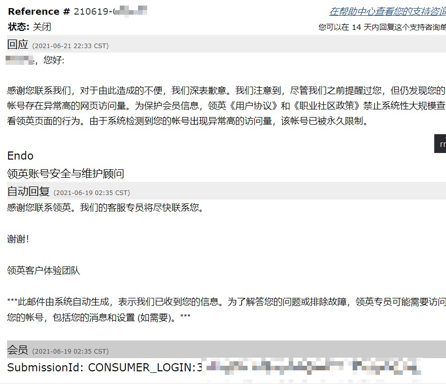
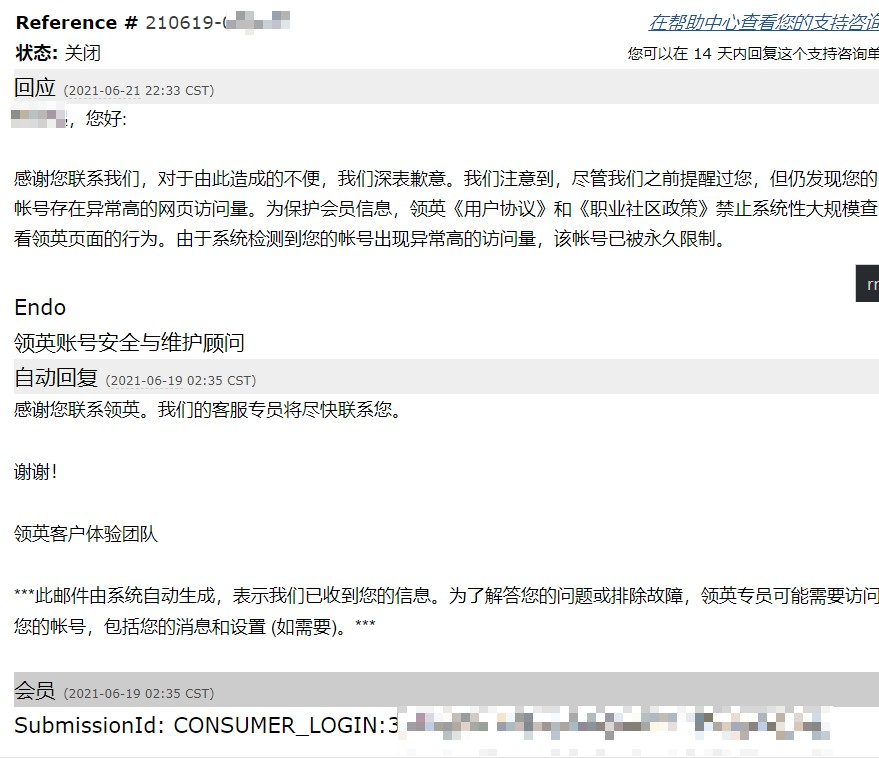

AI时代批判与共产主义意识形态输出¶
如果不是生活逼不得已，也不想搞掉脑袋的政治。
这是最好的时代，这是最坏的时代。¶
当火箭飞速前进的时候里面的燃料是与火箭一同飞行的，燃料们以为自己搭上了火箭的便车，殊不知燃料始终是燃料（燃尽然后被随意遗弃），不是乘客 1
我们确定是AI这趟列车的乘客吗，而不是燃料吗？
在《Life 3.0》中，MIT的物理学教授Max Tegmark 列举了十几种关乎未来人类与AI的可能情景 :
AI做主导者的自由主义乌托邦
AI成为人类的善意独裁者
AI和人类平等共存的乌托邦
AI作为人类幸福的守护者和指路灯
AI主导着人类，也保护人类的安全
AI奴隶着人类
AI征服了人类
人类灭亡后，AI成为人类的后代
AI把人类当成宠物养在动物园里
AI成为独裁者的工具
AI消灭了人类对地球的影响，让人类回归田园时代
AI 和人类一起走向共同灭亡 乐观点来说，我们自身的行动很大程度上会影响上述情景的走向，而预测未来最好的方法就是去创造未来。317
有这样读来讽刺的互文：人工智能，能治工人！10

商业上，以目前DL的技术能力，应用场景逐次从结构化受限到非结构化开放场景，所以除非技术有大的突破，落地的顺序是 工业机器人(非常受限场景) -> 服务机器人(比较受限场景) -> 家用机器人(开放场景)。
可见，人工智能对于大多数人（无产阶级）而言，首先是监管和驱逐。历次工业革命提高生产效率，在减少工作的同时，增加新的工作机会，劳动者可以通过学习掌握新的工具从而分享生产力提升创造的价值。这些都只是生产工具上的更替，顶多是加速了生产罢了，但这一次AI革命不一样，工具从替代了监工到替代了劳动者本身。321
马克思的《1844年经济学哲学手稿》指出：工人创造的商品越多，他就越变成廉价的商品。物的世界的增值同人的世界的贬值成正比。293 即，代码越多，码农越困难11；机器生产得越多，无产阶级越困难。这是私有制下的怪象。
在财富的分配来说，生产资料和生产工具的所有者将获得其中的绝大部分；伴随着很多简单重复工作的消失，如果不能创造出新的工作形式，或者教育无法适应社会的变化，大规模结构性失业在所难免。AI + 机器人 在各行业普及之后，最可能出现的3个问题： 大规模的结构性失业，人们跟不上变化；而由于大部分人失业与资本家拥有AI高阶生产力，将会有史以来的最悬殊的贫富差距；生产力高度发达，需要重新定义“工作”，重新定义价值。321
在资本主义时代，自动化将制造巨大的经济危机，大部分人因为失业没有足够金钱购买商品；而共产主义时代，由于人人都能得到所需的产品，保障了经济正常运行，同时借助自动化能减少必要工时，而使得人们可以腾出实践从事更多自己想做的事（哪怕其生产效率不高，比如钓鱼、旅游）。所以我们必须反对资本主义这种将少部分资本家（或股东）的利益为主要目的，而忽视绝大部分人类利益与幸福的意识形态！336
哲学声明¶
声明以下皆为本质论的观点，当我言说，变化已然发生，我所言说的就算曾经是现在也不一定是。还是需要不断在变化中澄明现实，即不断从实存论经过感知现象、通过艺术描述现象。178
警惕教条主义：盲目相信我的或他人的观点，就陷入僵化的教条主义或形而上学，一切仍需再次实证。警惕修正主义：但如果打着“反教条”、“符合现时代理论和实践需要”、“先进”的口号，又要大胆怀疑其“修正”和“篡改”是否偏离了本文的本心：人类整体团结，又能各自充分自由发展，各尽所能、各取所需266，不得牺牲无产阶级的根本利益275，底线是没有一个受苦受压迫。264修正主义，或者右倾机会主义，是一种资产阶级思潮，它比教条主义有更大的危险性。修正主义者，右倾机会主义者，口头上也挂着马克思主义，他们也在那里攻击“教条主义”。但是他们所攻击的正是马克思主义的最根本的东西。330
注意区分字面、含义、感知、现象、现实，才能探求真相，分辨谎言：“是”之所以“是”不是因为字面的“是”，而是由于实际的“是”（也非感知“是”）的。我们有限把握“是”的天生手段是生理感知现象（看的视觉、闻的嗅觉、触的感觉），后发掘出人工手段，一种是通过艺术性描述映射现象，再上升综合为语言表达（说语音与写字面），再生理感知现象（听），再逻辑推理（凭借过去感知反映射出含义）得到新感知；另一种是通过印刷、录制、摄影、电子技术215来记录现象，（通过电报、广播、天线、网络、移动网传播，）再通过生理感知这种人为定格的现象（目前只有看、听两种感知）。真相是通过媒介直接推演出现实的理想化情况。真理属于真相的一种，真理是语言直接逻辑推理出现实的理想化情况，而实际上，语言可能误表感知、感知可能忽略现象、现象可能片面现实。
反对“技术无善恶论”：技术似乎不再是不分善恶的工具，人不能确保其对于机器有完全的控制能力，技术好像有着自我的逻辑反过来去控制人。
不粉饰真正的悲哀¶
驳“存在即合理”论：存在表示实然，合理表示应然，那存在即合理的意思，无非为了合理化一切现象，这显然是一种保守的、原地踏步的论点。而进步的观点，是发现问题改变现状。
驳“用脚投票”论：常说的批判埋怨的话，有什么样的消费者就有什么样的产品，有什么样的观众就有什么样的节目。可事实上这种用脚投票的行为，要得有其他的产品可选择，当坏的得不到惩罚，而压得好不得不坏才能生存，那又如何筛选？
不粉饰真正的悲哀：每个社会的发展，靠的是整个社会基本共识的整体进步，而不是一部分人将另一部分嘴捂住，粉饰出来的进步。28
什么是消极。是一杯水剩下半杯多觉得自己可能会渴死。
什么是事实。是杯子里没有水，你觉得你会渴死。
什么是洗脑。是你的杯子里明明没有水，但有人拍拍你的肩膀，指一指守着水桶的人，说你不会渴死的，你也觉得自己真的会像人家一样不会渴死。
什么是悲哀。是舞台后的你要渴死了，有人在舞台前汇报演出，却演一个有水可喝的人，台下掌声雷动，人民不缺水了，拉下大幕，别人把你的尸体踢到一边。17
驳Facebook人工智能实验室负责人的Yann LeCun的AI技术无威胁论：有些人是因为对人工智能的原理不理解而导致恐惧，有些人是为了个人名望而宣扬人工智能威胁论，有些人则是为了商业的利益推动人工智能威胁论。是，我不完全否认这个想法，但不意味着“AI技术无威胁”。同样有些人正是因为对人工智能的原理的理解而导致恐惧，有些人是为了个人名望而宣扬人工智能无威胁论，有些人则是为了商业的利益推动人工智能无威胁论。真正的关键绝不在于目的或立场，而在观点是否有理有据可信。
经济的基本概念 87¶
最终目的与历史唯物主义理念¶
共产主义：在共产主义社会高级阶段上，在迫使人们奴隶般地服从分工的情形已经消失，从而脑力劳动和体力劳动的对立也随之消失之后；在劳动已经不仅仅是谋生的手段，而且本身成了生活的第一需要之后；在随着个人的全面发展生产力也增长起来，而集体财富的一切源泉都充分涌流之后，——只有在那个时候，才能完全超出资产阶级法权的狭隘眼界，社会才能在自己的旗帜上写上：各尽所能，按需分配！从而迎来人的解放和全面发展324（注意区别于儒家的大同世界190 和西方的空想社会主义——《乌托邦》345等空想，因为其没有现实对于事实的科学判断、也没有相应的理论可推理得；还要注意一种宿命论观点，不顾缘由地宣判其必然性，但一旦从唯物视角去看，没有一蹴而单靠文字的跳跃，共产主义需要我们不断发挥主观能动性，运用批判的武器与武器的批判来不断改造！270）
人的阶级性与阶层¶

什么是阶级？列宁把阶级划分的依据归结为生产资料的所有制关系。简单地讲，拥有土地、耕牛、机器等生产资料的就是有产阶级（地主阶级、资产阶级），没有的自然就是无产阶级。列宁指出：所谓阶级，就是这样一些集团，由于它们在一定社会经济结构中所处的地位不同，其中一个集团能够占有另一个集团的劳动。286
奴隶社会有奴隶主和农奴两大阶级，封建社会有地主阶级和农民阶级，资本主义社会则有资产阶级和无产阶级。奴隶主压迫剥削农奴，地主压迫剥削农民，资本家压迫剥削工人。
在现代社会，社会分成两大对立阶级——资产阶级和无产阶级，很明显，资产阶级就是这样一些无偿占有无产阶级劳动的集团，而无产阶级便是那些没有生产资料，因而不得不出卖自己的劳动力给资产阶级以换取工资的集团。
知识分子是工人阶级的一部分，是脑力无产阶级。343资产阶级和脑力无产阶级之间的区别是阶级区别，而脑力无产阶级和体力工人阶级之间只是阶层区别。
一定搞清楚，知识分子是为谁服务？在阶级社会里，一切知识都是有阶级性的，因为它涉及到由哪些人来掌握、为哪些人服务的问题。知识分子，就大多数来说，可以为旧中国服务，也可以为新中国服务，可以为资产阶级服务，也可以为无产阶级服务。288

社会与角色¶
经济体制与思想意识形态：¶
国家与意识形态并不绑定，国家更多是只是个地域政治的概念，一个国家里有各个意识形态，主要看那种意识形态主导。
君主主义（英语：Monarchism）指主张恢复君主制或保卫现有的君主制的一种政治运动、思想，保护君主政体或奉行君主原则的政治信念。君主主义者（Monarchist）则指这种运动的参与者。258
封建主义：封建社会是地主将土地租给农民播种，租期内土地由农民掌控，但要定时向地主交地租和其它税。299
封建主义的思想变体（王朝社会主义）（德文：Staatssozialismus，英文：State Socialism），专指19世纪德国强人奥托·冯·俾斯麦的福利制度和政策。1871年普法战争之后俾斯麦完成了德国统一，但德国政府左面受到工人运动的威胁，右面受到资产阶级政党民主诉求的压力。俾斯麦既反左又反右，强力推出6000余条保护劳工的法令，既保护了王朝利益，也实现了他的国家需要照看人民的政治理念。19世纪末的德意志因此成为世界上第一个福利国家。这字眼也是形容奥匈帝国末代皇帝卡尔一世的亲社会主义政策。
资本主义（Capitalism）是资本属于个人所拥有的经济制度，是以私有制为基础。其中，资本是给资本家带来剩余价值的价值。货币、机器厂房等生产资料、商品是资本的三种物质承担者（或形式），但它们本身不是资本，只有当货币和生产资料被资本家用来榨取工人创造的剩余价值和商品体现着工人创造的剩余价值时，货币、生产资料和商品才成为资本。它体现了一种特定的生产关系。资本主义从封建社会发展过来，从掌控土地，改为农业工人到农业资本家的农场干活，之后拿钱离开，不掌控土地。299资本主义里资本家与工人之间是雇佣关系。资本主义分配下，脑力无产者虽然吃得住得比体力无产者更好一点，但是也还是给人打工的，只有辛勤劳动才能过生活，资产者则不同，他们靠资产性收入就能过上神仙一般的生活。165
资本主义的思想变体（+军事扩张，殖民统治）== 帝国主义，主要是一个国家通过夺取其他国家的领土和奴役其人民建立经济及政治霸权，凌驾于别国之上。帝国主义国家为了争夺资本输出地不惜发动世界大战。310帝国主义可能衍生殖民主义、军国主义、法西斯主义。帝国主义一般是视为负面的，因为在被占领的国家中，大多数人受到剥削，只有极少数的人从中得利。列宁观点：垄断代替自由竞争，是帝国主义的根本经济特征，是帝国主义的实质。365
爱国主义或民族主义的可怕变体（+军事扩张） == 沙文主义（法語：Chauvinisme ; 英語：Chauvinism）原指极端的、不合理的、过分的爱国主义或民族主义。 源自拿破仑手下的一名军士尼古拉．沙文（ nicolas chauvin ）的名字，他由于获得军功章而对拿破仑盲目崇拜，感恩戴德，并因而狂热地拥护拿破仑以军事暴力向外扩张，征服其他民族的政策。350现在沙文主义定义为“认为自己的群体或人民优越于其他群体或人民的非理性信念”。 也因此，沙文主义者会将自己的群体或人民视为独特的，而将其他的群体或人民视为平庸的。349
帝国主义的实践变体（+沙文主义）== 法西斯主义（Fascism）是垄断资本主义国家内部矛盾尖锐对立情况下出现的一种社会制度，是资本主义国家对风起云涌的共产主义运动的应激反应的结果。以民族、国家为效忠对象。295为了镇压工人运动，统治阶级扶植一小撮无视法律的打手（墨索里尼、希特勒、日本军阀）上台，对整个国家实行高压特务（盖世太保、特高课）统治。125对内镇压，对外侵略，去抢外国人的。283法西斯占领了别国领土和人民,履行了国家资本的意愿,资本因摧毁数百方人的生命而获得了巨额利润。347包括奉行三民主义的中华民国298。测试自我思想296：有49%法西斯。
资本主义的思想变体（妥协以加快崩溃，来促成共产主义的主张）==加速主义（Accelerationism）：在无力对抗资本主义的情况下以妥协的方式所找到的迂回策略。指更广泛的支持资本主义的深化的观点，这些论点认为这将加速资本主义自我毁灭的倾向，并最终导致其崩溃。250加速论者的理论分为相互矛盾的左右派系。“左翼加速主义”试图将“技术演进的过程”从“资本主义的限制”中剥离，将现代技术改造为服务社会有益和解放的目的；“右翼加速主义”支持资本主义本身的无限强化，带来一个技术奇异点，即人类可能作为“落后生产力”被淘汰，但“超人类”仍然在利润轨道上继续运行。253
卡尔·马克思提出了关键的一个问题：工作创造了价值，但工人（“无产阶级”）得到的却是维持他们生活和生存的最低工资。所有利润都归工厂（或农场、公司，或马克思笔下的“生产资料”）拥有者所得。
社会主义（socialism）是一种社会学思想，诞生于16世纪初，主张整个社会应作为整体，由社会拥有和控制产品、资本、土地、资产等，其管理和分配基于公众利益。马克思和恩格斯对社会主义提出了他们的理论体系，亦认为社会主义社会是资本主义社会向共产主义社会过渡的社会形态。马克思的社会主义思想，人人平等。297
战争社会主义
社会主义的反面思想变体——机会主义：是工人运动中的一种理论和实践，它与工人阶级的真正利益相悖，并将封推向有利于资产阶级的道路上通过妥协或公开投降行事。机会主义不可避免地使工人运动服从于资本家的利益，并使其腐化。与无产阶级的革命运动一起感染的机会主义是工人阶级的资产阶级和小资产阶级倾向的反映。机会主义的概念表征了左派运动中一系列对资本主义无害甚至对其有益的思想和实际解决方案。机会主义的实践包括关于阶级之间合作的理论以及关于在没有革命的情况下建设社会主义主义的想法，通过资本主义架构内的改革和改进道路走向社会主义，机会主义者倾向于误导工人资产阶级政府的各种行动，从而导致妥协和盲动。机会主义还包括极度夸张的革命主义以及时下押注一切直接行动而忽略了发展和集结工人阶级的艰苦日常工作的态度。在过去，机会主义者多次背叛了社会主义的斗争或者妥协使大劳动人死胡同或者将他们与广大劳动人民脱离开来。例如，在1914，第二国际领导人通过支持帝国主义国家参加第次世界大战而公开出卖了工人阶级的利益。对工人阶级造成最悲惨的后果是德国社会民主党的机会主义者，他们作为资产阶级政府的成员参加了1918年德国革命的镇压，由于他们的行动，整个德国真正的革命共产主义力量被孤立和击败，工人运动遭到镇压。这直接导致极右派力量的加强和法西斯专政的建立。1970年，智利得萨尔瓦多·阿连得总统采用温和和平的改良主义，放弃了无产阶级的专政，解除了工人的武装，最终导致法西斯主义专政的建立。348
机会主义的可怕思想变体（机会主义+国家主义）== 国家社会主义（德语：Nationaler Sozialismus；英语：National Socialism），也译作民族社会主义，起源于十九世纪末叶的欧洲（1890年代），是主要在二十世纪上半叶于德国境内流行的政治思潮与运动，其意识形态融合了国家主义、民族主义与社会主义。国家社会主义是一种主张民族共同体至上的社会主义的意识形态，这与主张国际主义的传统马克思主义相对。255
国家社会主义的可怕实践变体（+消灭其他种族的极端种族主义，+征服其他国家的极端爱国主义365即沙文主义，+专制独裁统治）== 纳粹主义（德语：Nationalsozialismus）一词来源于纳粹党 全称其全称是“国家社会主义德国工人党”255（Nationalsozialistische Deutsche Arbeiter Partei），反共产主义。纳粹（Nazi）是由国家社会主义（Nationaler Sozialismus）抽取国家（National）的na与社会主义（Sozialismus）的zi而成。国家社会主义与纳粹主义德文拼法一致，但国家社会主义由两个单词组成，而纳粹主义是一个单词。两者间之意识型态概念乃有所承接，后续之纳粹主义是国家社会主义的一个政治实践，但纳粹主义的发展则失却国家社会主义的多义性质，转化成特质属于政治与经济上极端之意识型态。希特勒发现，犹太人一方面利用资本主义的手段不遗余力地剥削人类，另一方面则用马克思社会主义的学说去笼络在他们权势下的牺牲者。纳粹主义主张以民族为人类群体生活之“基本单位”，宣扬种族优越论，认为雅利安人种为最优秀的、对人类进步唯一有贡献的民族。认为“优等种族”有权奴役甚至消灭“劣等种族”，以作为形塑特定文化与政治主张之理念基础。254纳粹主义更多是以整个国家的利益为目的，而不是工人个人的利益。在纳粹时期，德国实现了完全就业，工人失业率极低，但是这种完全就业是建立在德国大量托拉斯基础上的。工人的完全就业，是为了国家机器更好的运转，对工人本身来说，在托拉斯中就业，是完全没有议价权的。297
机会主义的更具伪装成马克思主义性的变体——修正主义：是对马克思列宁主义原理的反科学修正，以创造性地理解新的现实现象为借口，修改了经过实践考验的马克思主义理论的基本立场，常被伪装为理论创新。348并非修改马克思和其他前人的个别结论就是修正主义，比如马克思预言的在西方几个国家实现是错的；而是为了掩饰他们所主张的反无产阶级和反马克思主义的资产阶级思想。经典例子：德国社会民主党人爱德华·伯恩施坦，在他的作品中，他用改良主义来取代革命，用阶级调和取代阶级斗争，剥夺了劳动者的唯物主义世界观，实际上是支持了殖民主义和现代帝国主义。某些修正主义者形式上高举毛泽东，是为了保证其对毛泽东的言论的解释权，又巧妙地用反个人崇拜、权威权力的语句，来进行去反对阶级斗争，批判“建设社会主义经济体制和对资产阶级进行阶级斗争”行为。339毛泽东提出的所谓“四个存在”：社会主义社会是一个相当长的历史阶段，在这个历史阶段中，始终存在着阶级、阶级矛盾和阶级斗争，存在着社会主义同资本主义两条道路的斗争，存在着资本主义复辟的危险性，存在着帝国主义和社会帝国主义进行颠覆和侵略的威胁。历史上，中共通过五年计划完成社会主义改造后，由于在经济建设工作中照搬苏联经验，体制上存在等级工资制与干部特权等问题，故毛泽东希望通过“大跃进”、“人民公社化运动”与“反右运动”等自上而下的改良来削弱行政官僚摄取的工业化红利。随着政治体制自身改革的失败，毛泽东决定发动由体制外民众力量推动的“无产阶级文化大革命”来对抗官僚主义。340。邓小平第二代领导人过于强调经济发展（不否认其有做大蛋糕的贡献），“振兴经济，首先要振兴科技，科学技术是第一生产力342，实现现代化343”，为科技人员创造生活条件343，有工业标准化、计算机普及341。虽然，在蛋糕没做大的情况下争几毛意义不大，但如果这样做大的蛋糕是用我们的血肉当成蛋与奶油，那这样的蛋糕又怎么轮得到我们分？改革开放后，中国社会出现了官倒、权钱交易、腐败、特权、贫富分化扩大等种种问题362同时，八二宪法中修改了“无产阶级专政”改为“人民民主专政”、删除了“在无产阶级专政下继续革命”、罢工自由等掩盖劳资矛盾的内容。361而且包产到户延缓了机械化生产352，只注重所谓少数人的呼声而忽视了更远大更广大的人民利益352。我理解其不强调“阶级”的目的，是希望与资产阶级形成统一战线以快速发展我们相对较低水平的生产力364，但现在私有制经济发展到贫富极度悬殊到“抑制生产力”，急迫需要更多的公有制！
共产主义（Communism）是一种政治观点和思想体系，发源地为德国，现今的共产主义奉马克思、恩格斯思想为基本思想。共产主义主张消灭生产资料私有制，并建立一个没有阶级制度、没有剥削、没有压迫，实现人类自我解放的社会，也是社会化集体大生产的社会，面对恶势力也会团结一致。理想的情况是，“无产阶级”最终意味着每个人、工人将“根据能力给予，根据需要接受”，并民主地参与政府治理。
战时共产主义：苏俄在1918年-1921年国内战争时期推出的一项经济措施，旨在最大限度地保障非常时期布尔什维克政权的城镇和军队的粮食与武器供应。该政策由最高国民经济委员会于1918年6月颁布实施，1921年3月21日被列宁的新经济政策取代。
更多主义查询：https://plato.stanford.edu/
主义：左与右？¶
警惕：把嘴里的左混淆成经济立场上的左派，尤其是打着共产主义旗号，实现类似封建君权主义的极权主义。101
|资本主义国家视角的各种主义|35 |社会主义国家视角的各种主义|35
↑右派:小政府+起点公平(?机会公平说)
↓老左派:大政府+结果公平。美国政府二战后麦卡锡主义：对于仅要求经济待遇的工会则施以仁政，尽量提高工人们的待遇。很多工人在得到福利后便不再参与左派活动。（被招安）
新左派（马尔库塞的理论）：说工人已经资产阶级化了，不能指望他们建立不同的社会。在新左派眼中，工人不仅不是潜在的盟友，反而是最强大又最不可救药的敌人。本质是富人的游戏，嬉皮士是他们最好的代言人。三大主要行动：主张参与式民主、为拒服兵役而反对越战。102 主张多元化被右派利用，引入移民，降低劳动力成本，转移产业。
极右民粹主义：大政府+维护精英阶层利益。无视国内贫富差距扩大、优先解决国际贫富差距小的威胁。说看重民生的时候，说经济自由；说经济开放时，反驳国家利益高于一切。
黑砖组织：帚望把富人拉下水，不做任何妥协。无视国际局势外在问题。呼唤什么都不管的小政府，又希望能在弱肉强食的市场秩序中，能达到均贫富。你跟他谈改革，他就骂你独裁要民主；你跟他谈改善民生他又骂你限制自由。99
经济体制：私有制与公有制¶
相比私有制，公有制的概念则不太容易说清楚（注意：并不是无法说清楚，只是不太容易）。因为公有制作为私有制的对立面，起初并不实际存在，它最初只是马克思的一种理论设想。马克思认为，这是一种比私有制更高级的经济制度，这种制度一方面保留了劳动者的协作，另一方面又消除了剥削关系。但公有制具体怎么从一种设想变为现实生活中的实际事物，在马克思活着的时候，基本没有得到实践。
苏联建立后，苏联人把公有制从单纯的设想变成了活生生的现实事物。在苏联人看来，公有制经济就是国有经济（国家所有的自然资源、土地、国有企业、国有事业单位）和集体经济（集体所有的自然资源、土地、集体农庄、集体企业、集体事业单位）。苏联人之所以把这两种经济叫做公有制经济，是因为在这两种经济中，国家和集体已经把私人的生产资料所有权全部夺走了。在苏联最兴盛最强大的时候，人们普遍认为，苏联人规定的公有制就是标准的公有制。223
私有制¶
个体户。比如你在城市街头经常看到的个体户早餐摊位，摊位上所有用来制作早餐的食材和工具都是这个个体户私人所有的生产资料。这种私有制中，没有老板和打工仔的角色之分（故没有剥削关系），也基本不存在协作；
以雇佣劳动为基础的私有制。这种私有制更常见，比如你在市场上随便找一家公司，只要这家公司有老板和打工仔之分（有剥削关系），就是这种私有制了。之所以有人是老板，有人是打工仔，关键就在于这家公司的生产资料的所有权属于老板，而打工仔只有使用生产资料的权利。这一点老板和打工仔都是心知肚明的。至于公司老板究竟是一个人还是一群人，不影响这种私有制的性质。这种私有制中，打工仔内部存在协作关系，而且这种协作关系一般随着公司规模的增大而越发复杂化、精细化。因此，这种私有制的生产效率要远高于单打独斗的个体户。
最根本的矛盾——生产资料私人占有制和社会化大生产之间的矛盾。226
其潜在问题的具体的逻辑链条如下：
由于生产资料被资产阶级集中并扩大后，单个的人手中的生产资料（个体户）便在规模化生产面前显得越来越没有竞争力，从而在市场竞争中失败，没有足够的现金回流。
在市场竞争中的失败者因为没有足够的现金回流，只能贩卖生产资料来进行生存，生产资料卖完了就导致了无产者的扩大。168
因为私有制，资本和土地被少数人所掌握，而剩下的并不掌握生产资料的广大工人只能靠出卖自己的劳动力为生。而资本家为了利润压迫无产者，无产者由于避免失业而用拼命干来表现反而伤害身体。因为干完活就失业了，所以磨洋工，工人与资本家是敌对的。228
由于穷人买不起商品而减产，甚至停产，砸毁机器，破坏了生产力与资源。
为了获得垄断利润，还要封锁先进技术，使先进技术不能被推广应用。科技人员都是给他干活的，科技人员研究的成果会被资本家占为己有。无法形成人类的凝聚力。
而且资本家为了在竞争中不失败，还会互相阻挠破坏。这都要阻碍和破坏社会或者国家的发展。
TODO: 私有制、私有财产是人类贪腐、以权谋私、敛财、窃国的起源么？ - 刘镇锐的回答 - 知乎 https://www.zhihu.com/question/63071639/answer/208034800
公有制¶
公有制（英语：common ownership），是一种相对于私有制的经济制度。在这种制度下生产资料归公共所有，无排他性225，即不排除任何一个人。24
官方说法是，坚持公有制的主体地位，是社会主义的本质特征之一。公有制经济涉及的经济成分、针对的财产所有权、涉及的资产范围非常广，包括国有经济、集体经济、混合所有制经济中的国有成分和集体成分。346
可由定义所见，公有制不应该是国有制——“公家”的私有制。国有制是生产资料归政府所有，不归全国人民公有。公有制是生产资料归人民公有，不归政府所有。公有制里，政府对人民公有的生产资料只有管理权，没有所有权，政府就像个职业经理，没有所有权，无权处置人民的公有财产。国有制几千年前就有。古代的官地，就是国有制。古代的盐铁业，就是国企。私有制里，可以有国有制。356
注意区分生产资料和生活资料的概念：¶
生产资料是政治经济学中的一个概念，是人们在生产过程中所使用的劳动资料和劳动对象的总和，劳动资料比如有设备、机械、厂房、运输工具等；劳动对象比如有原材料、辅助材料、矿藏、木材、钢材等。
实际上，生产资料包括生活资料，比如大米小麦之类，即是生产米面的生产资料，也显然是人们赖以生存的生活资料。因此，如何共同所有这种类型的生产资料，就是个非常重要问题。225
生活资料又称为消费资料、消费品，是用来满足人们物质和文化生活需要的那部分社会产品。人们要活下去并得到发展（包括家庭生活、学习、受教育等方面），就要有吃的、穿的、用的各种生活资料，在劳动之余进行休息和文娱活动，也需要享受各种消费品。消费资料是人类生存和发展的必要条件。人类从事种类繁多的生产活动，归根到底是为了获取供自己消费的生活资料。308
计划经济与按票分配¶
公有制企业的产品，是属于全民公有的，要免费分配给全民，不要利润，不赚钱。它的生产是按照全民的人头计划的，有多少人就生产多少，然后再分配下去多少。
就好比一个家庭，是公有制，它的厨房是全家公有企业，它做的饭按全家人头做，然后免费分配给全家人吃，不赚钱，不要利润。
但是一个国家很多人，免费分配，会有人多领，也会有人不干活就想领，为了避免这个情况，会采用发饭票的方式，你干活就能领到饭票，不干活就领不到，干活多领到的饭票就多。这个就和资本主义的“工资”很像，其实不是。社会主义里没有老板剥削，而且不要利润，不赚钱。你拿饭票去领来饭，厨房直接把饭票扔灶火里烧了，不赚钱。但是资本主义里，你拿工资去买东西，老板不愿意把钱烧了。360
经济现象：剥削¶
从概念上说，当劳动报酬小于他们的劳动贡献，就产生了剥削；剥削是对他人生产要素的贡献无偿占有。私有制经济中并非一定存在剥削，而公有制经济中未必就没有剥削。我们不能笼统地把私人业主等同于剥削者——只有当私营业主付给工人的工资低于其边际产品收益时，我们才能把私营业主界定为剥削者;我们也不能断言公有制企业中的劳动者就一定不受剥削，除非他们的劳动报酬等于他们的劳动贡献。190
我发现，问题在于，不论私有制还是公有制，由于效率要求每个人会社会分工，每个人的劳动贡献往往是只有几个方面，不可能覆盖所有。在市场经济的思路下，需要将贡献换成其他人的贡献、或者是通用报酬——金钱，在这时候是很难控制这种兑换关系的稳定，越需要对方的一方往往在这种兑换关系处于下风，由于钱的通用性，使得其往往更被需要，导致了卖一方的弱势地位。如果用控制价格的思路，只能导致交换停滞，那该如何解决？
资本主义¶
资本主义 61喜爱强调自由，而对于一无所有的无力应对机器的劳动者而言，这意味着“自由”的接受了征服者与资本的支配20列宁同志的话如此深刻：资本主义社会的自由始终与古希腊共和国的自由大致相同：奴隶主的自由。333
所谓自由或者规矩，只是对资本有利就是自由或者规矩，对资本不利就修改规则让你自由。74
福柯指出，资本主义社会在保障安定的秩序之下，人们“不是自然状态，而是一部机器中精心附设的齿轮，不是原始的社会契约，而是不断的强制，不是基本的权利，而是不断改进的训练方式，不是普遍意志，而是自动的驯顺”。也就是说，权力对人的生命进行调控，使得肉体本身成为权力规训的靶子。95
社会资源的不平等分配呈现加剧的势头，起点高，勤奋的精英比比皆是，并且还会互相帮助，顶尖资源和顶尖资源相配合，使得这种资源配置变得更加高效，在扩大差距的同时提升总量，“资源生资源”，越来越多的交际（人脉资源）变成了相似资源水平的人进行“等价交换”，好感，人情，及时的有效信息都和资本挂了钩。107
资本、资本家、走狗们¶
什么是资本¶
资本主义是资本洗脑术的孕育温床，比如将一个经济组织所创造的成就和价值体量，全部归功于一个人的身上，让这个人成为资本代理人，形成具有聚众效应、又极度神化的崇拜效果。66
资本不可避免的增值性，因为资本如果不能继续保持增值，它就会被更能增殖的资本淘汰、吞噬88
谁是资本家¶
抽象定义¶
资本家何以成为资本家？是马克思说因为他占有生产资料。更可怕的是，占有钱这种交易资料。让除了你给他打工，你就没有钱，没有别的选择。187
“作为资本家，他只是人格化的资本。他的灵魂就是资本的灵魂。而资本只有一种生活本能，这就是增殖自身，获取剩余价值，用自己的不变部分即生产资料吮吸尽可能多的剩余劳动”——《资本论》
所谓“资本家是资本人格化的体现”指的是，作为资本家，只要你处在这个位置上的时候，你的行为模式会完全按照资本的积累需要而进行。也就是说，一旦有了这么一种身份之后，资本家一定程度上是失去了选择的自由的。活的比较开心的大资本家就是因为他们在经济结构找到了一个可以使资本相对稳定增殖的地位，至于中产小资、工人贵族们就没这么幸运了，每时每刻无不在担心自己的跌落。311 他只有近可能把公司越做越大，净利润越来越高，而不会想着去减少自己的所得而回馈劳工的。90 不夸张地说贪欲，是成为资本家入门条件91
具体而言，谁算资本家？谁大、谁小？¶
《资本论》里写雇工到了8个就不是普通的个体经济，而是资本主义经济是剥削。139我认为，其说法的由来是因为前一次工业革命下，工业规模化生产下要求了大规模雇佣来剥削劳动力，而剥削的本质主要不在雇佣数，而在于劳动人民的工资与资本家所得的利润间的分成、分配比例！139
常见粉饰手段，即头衔（话语体系里+人民、+民营、+民族、+爱国）：¶
头衔不能改变其吃人的本质。披上羊皮的狼还是狼，而且是更伪善更凶恶的狼。141而当劳动人民用“资本家”这个概念去称呼所谓的“企业家”时，这表明劳动人民透过现象抓住了本质；当“资本家”要求全社会用“企业家”这个概念来称呼自己的时候，这表明他们试图诱导劳动人民远离本质而停留在现象层面的认识上。120
+人民：西方国家曾经提出过“人民资本主义”的概念，试图把剥削劳动人民的资本主义制度和劳动人民杂糅在一起，仿佛在资本主义面前冠以人民两个字，资本主义制度就成了“为人民服务”的制度了。他们这么做的目的，是为了混淆劳动人民的视听。前段时间观察者网提出了“人民富豪”这个概念，这和“人民资本主义”如出一辙。只不过西方国家敢于承认自己是资本主义，而观察者网不敢承认这一点。相比西方的坦荡，观察者网更为卑劣。再造新词：“人民赌王”。
+民营：盗用全体民众的名义，把资本家的私有企业称为“民营企业”334
+民族：TODO:“民族企业家”
+爱国：“爱国企业家”
资本家的千层套路¶
尽量压低工资、随意罚款：
白占学徒、实习生工钱：因为学徒名义上是学手艺的，不是正式工人，资本家根本不用给工钱。旧社会的学徒工，受资本家的剥削非常惨重。他们在进厂时，香烛拜师，签订关约书，保证听资本家管教。关约书，实际上是学徒工的卖身文契，一般的上面都写着：学徒要学三年到五年，才能满师。满师以后，得给资本家帮忙几年，作为报答学手艺的代价。在学徒和帮忙期间，不能随便离开厂子。生了病，资本家不管，因工伤亡，资本家也不负责。有的甚至写上“打死勿论”的字样，就是说资本家把学徒打死了也没有说的。学徒工名义上是学手艺的，其实资本家把他们当牛马使唤。大厂子的学徒，成天干杂活；小厂子的学徒，什么都干；扫地、做饭、洗衣服、倒马桶、洗尿布、带孩子，从早到黑，一刻不停。而资本家却只管他们的粗茶淡饭，有的连饭也不让吃饱。如今在上海邮电器材厂当工程师的蔡金龙，小时候在一家厂子里学徒，因为受不了资本家虐待，逃走了三次。每次被抓回来，就要挨一顿毒打。好容易熬过三年，可是因为家里穷，办不起四十元钱一桌的满师酒，资本家不让他满师，又当了三年学徒，三年过后，还是办不起酒，又做了三年。整整苦熬了九年才满师。满师以后，资本家也只给他一般工人三分之一的工资。资本家就这样占去了学徒工的全部和绝大部分劳动成果。124
新工人来替换旧工人：老工人入厂时间长，工资一般的比较高，用新工人替换老工人，能少开支一笔工钱；老工人在常年繁重的劳动下，身子骨都被资本家折磨垮了，而新工人年轻力壮，能给资本家干更多的活，赚更多的钱；老工人有一定的阶级觉悟，人也比较熟，不甘当资本家的牛马，经常跟资本家“斗”，而新工人刚入厂，斗争经验不多，比较好管理。所以在旧社会，工人干到一定的年头，就有被赶走的危险。比如解放前，上海有一家纺织厂，从一九三三年到一九三五年，每年都要解雇百分之三十到百分之七八十的老工人。资本家用解雇老工人，招收新工人的办法，从工人头上又多榨取到不少的血汗。
劳动合同来显得自愿化：资本家与劳动者通过契约即劳动合同，将这种剥削关系未造成双方平等自愿的合作关系。实际上这种合作关系是建立在工人不占有生产资料这个前提条件上的，所以一开始就是不平等的，工人为了生存，只有受雇于哪个资本家的自由，而没有不受资本家雇佣的自由。150
国际化扩大劳动市场：资本家以产业转移威胁劳动人民不能提高劳工待遇126、资本家的谎言领取一元钱的工资（不包含另外的获得资本增值部分的奖励）151、中国资本家利用离岸信托将财富转移到外国280
亏损、破产的风险论（即资本家承担了资本的亏损的收益，所以也应该获取资本利得）：讨论亏本问题时，把资本家当成了具体的单个的人，而非马克思口中的资本人格化的资本家，存在亏损的资本家，但不存在亏损的资产阶级。亏损的风险孕育在贩卖商品转化为金钱的过程，商品的货币价值贬值，而劳动价值不变？资金去了哪里？资金是去了别的卖材料和买机器的资本家那里，反驳可以是可能资本家高估了劳动价值而多付了工资，可工资与材料厂房费谁更占主要成分？工资常常少，而且被亏欠。 150
资本主义的走狗们¶
资本家本身就是资本主义的最大走狗，而后资本家通过各种手段拉其他人下水，一同成为资本主义的走狗们。手段如下：
第一步，先大饼忽悠、高薪收买部分“更高级零件”的工人阶级，使之精神整合入资本主义体系：¶
资本家的乏走狗：想当资本家又当不上资本家的无产阶级，即资本家的乏走狗147。生着无产阶级的命，操着资本阶级的心。心理是想要赶紧干一桶金，将来成为资本家剥削别人。192而资本家就可以利用画饼表现有致富的可能性，来削弱无产阶级力量以减少大规模合作反抗组织的可能性，保护其自身。
精神小布尔乔亚（精神资本家）：很推崇一种“努力论”，实则是为大环境的不足辩护，他们总觉得，别人过不好是自己不努力。其实并不是小布尔乔亚，因为他们既不认同左派推崇的平等理念，很为老板着想，但也不推崇右派人士主张的法治，因为他们觉得你是底层被欺负活该。196无条件地、主动地讨好资产阶级，喜欢用资本家给了我们工作和工资，来歌颂资本家。其原因有资产阶级的洗脑：训练对资产阶级永远的奴仆，既能踢资产阶级创造利润，又不会惊扰资产阶级的安宁和悠闲。285反驳：地主收走劳动者生产的粮食，再仅分给他们勉强饱腹的份额。类似精神地主：骂地主的人有本事不领地主家的粮食！203 常见自我牺牲语句：每天眼一睁，几百人吃、喝、拉、撒都得要等着黄老爷伺候；事实上，几百人每天眼一睁倒要伺候黄老爷的吃、喝、拉、撒。282
中产阶级：马尔库塞说，工人阶级已经很难被称作“无产阶级”了，因为他们不再是一无所有的，当发动革命时，他们可能会感到失去的不再是锁链了。利用看似丰厚的薪资待遇和相近的工作环境来收买一些工人阶级。245但中产阶级其实是伪有产阶级，利用金融手段让这个群体假性获得固定资产，利用其相比略高薪与抱怨996的话语挑拨起阶级内部的矛盾，再利用渴望稳定、避免失去的心理，从反抗转变到讨好的态度，不再具有革命性，让其成为资本的奴隶；而为了防止这个群体的发展，利用高额遗产税、高福利税收之类的进行控制，让中产阶级无法将这种假性资产变现，只能一代代的继续做资本的奴隶，并且以此来让他们被剥削的同时还成为资本主义剥削更底层无产者的帮凶，成了维护资本主义的力量，而被更持续的剥削。而就是这么一群刚脱离现有阶层，甚至说还没有脱离现有阶层的人，迫不及待地要和原生的阶层划清界线。中产阶级总是喜欢通过一些诸如生活方式、品味等虚无缥缈的东西来和底层划出界限195，鼓吹不属于他们阶级的消费，如豪车奢侈品包包197，整一些“高级”生活趣味，如以喝咖啡高雅，就非咖啡不饮，非高档咖啡不饮。220利用的恰是一种“补偿心理”：工人们只有在消费中才能感到快乐，因为他们所消费的正是自己通过运用人的机能——劳动所制造的产品，所以消费中的工人才不会感到自己的劳动被资产阶级给无偿占有了，才能做回人293
第二步，矛盾转移到其他雇员上（培养工贼来管理、限制、刺激其他刁工、懒工）、消费者，来麻痹剥削实质：¶
职业经理人：职业经理人管理和经营资本家的企业，使得资本家成为纯粹的资本家，而职业经理人的本质也还是工人150，实际上出了事往往解雇管理层45。将自己与员工比喻为家人，用家族情感瓦解了员工的利己主义，更是用远大的报复和梦想的蓝图，感化了员工思想，加强了员工的积极性。222。
某些HR：让HR来主导降工资、承诺不生育等有害于工人阶级的事，转移仇恨。资本家肯定不喜欢女员工生孩子，我不但自己承诺五年内绝对不生，我还让其他女员工也承诺五年不生；240
奋斗逼：“舍弃人性”来不断给自己的加班冠以奋斗向上的正能量，舍弃健康与家庭，并由于扰乱了就业市场的正常价格，带动内卷。因为在资本主义的生产关系下，员工的奋斗无法直接带来其生活条件的改善，而对资本家却能带来实实在在的剩余价值。278按照劳动法规定，工作日加班工资是平时的1.5倍，双休日2倍，法定假日3倍，因此如果你的工作时长为996，员工只有拿到市场工资的2.275倍，在经济帐上才不吃亏。188为了资本家的个人私利而鼓吹奋斗，还是为了绝大多数人民的共同利益艰苦奋斗，其奋斗的含义大相径庭。
矛盾转移到消费者上：外卖的加5分钟、小费将老板与雇工的矛盾转移到消费者与雇工的矛盾
麻痹剥削实质：有很多自以为没有被剥削的高阶工人即所谓“工人贵族”，是一些受过专门训练的、掌握有特殊技能的熟练工人或者高级技工287被高工资所迷惑189，就误以为没有被剥削，其实已经被收买为走狗。只看到了资本主义经济在不断地发展，却看不出它所造成的社会阶级撕裂。其实上剥削率高的人也许生活水平更高一些。比如你是专科生，一个月送快递创造的财富只有三万元，你的工资一个月五千，你的剩余价值率就是百分之六百，如果你是一个博士生，你的工作是给某机构研究所研发坦克，外包一次可以创造五千万的交易额与利润，但是你的工资只有一年一百多万。你要是无产阶级博士你肯定还觉得多棒的岗位啊。其实你的剩余价值率已经达到百分之五千了。186
第三步，产品的市场宣传鼓吹消费主义，同时还将其爱国严肃化、娱乐鬼畜化：¶
某些无良市场营销：虚假宣传来抬高所谓价值，利用信息不对称收割傻子。
小粉红：万物都可扯到爱国，不怎么样就是不爱国。某些企业利用爱国情节，天天鼓吹自主研发进行爱国主义道德绑架，小粉红来其为免费其造势宣传。180事实上，占据社会财富的富人并不爱国，富人有的选。穷人才是最爱国的，因为穷人没得选。坚持“某国人”这一身份恰是因为没有别的可以依靠。205动不动骂别人精美，是收了美国的钱206 事实上，企业不因为受哪国政府管制，哪个领导人而是哪个国家的企业。阿里腾讯因为市场在中国，所以受中国政府管制；索尼CEO曾有日本人和美国人，美国人的时候也没有成为美国企业。261
娱乐化宣传和免费广告：偏离产品实质的理性客观介绍，而一味的利用流量明星、蹭热度的鬼畜给别人做了宣传（蜜雪冰城209、屈臣氏316、金轮等）；美团骑手（是外包，无五险一金243，却穿美团的工作服给打免费广告）；资产阶级由于掌握有生产资料，因而不用从事生产劳动，文艺充斥享乐主义、奢靡之风289
第四步，社会舆论吹捧资本家形象正义化，学者一味红利化劳动人民、民族自信而忽视阶级问题：¶
某些无良宣传媒体：吹捧“人民富豪”提供了大量的工作岗位、只宣扬“大慈善家”的伪善面目，来收钱洗白原始资本积累中的肮脏事迹(你们吸干了无产者最后的一滴血，然后再对他们施以小恩小惠，使自己自满的伪善的心灵感到快慰，并在世人面前摆出一副人类恩人的姿态。而你们归还给被剥削者的只是他们应得的百分之一，似乎这样做就是造福于无产者！327本质就是左手剥削，右手捐款229)。以民族资本家等爱国主义的旗帜来掩饰剥削。聪明的某老板：开始把自己的钱分出一部分投入到某社会性建设，他还是最富的，其他人拿了钱也对他造成不了威胁，反倒因为他给了钱，也对他毕恭毕敬起来，不再生事端，成就了美名。216职位取消大小周：先用违法手段完成原始积累，再带头政治正确确保垄断地位。219继续鼓吹私有化289
一些“市场”经济学家：吴晓波、白岩松嘴里的人口红利，如果站在资本的立场，你该为它欢呼，因为在资本眼里，人只不过是“人力资源”。170 人口是过剩、可死死剥削的人口，红利是资本的红利。171；向人才红利期转型172，又是「工程师红利」173；共赢论：能使双方的生活都更好，而事实上，工资的上升是建立在资本的更大规模的扩张的基础之上的，工资的提高速度永远也比不上资本的增加速度289；市场万能论：盲目相信市场能自我调节，自由放任资本家的剥削。305
某些学者公知：陈平的“2000人民币>3000美元”论来创造虚假的“民族自信”234，善于掩盖问题欺骗群众236，无视外国资本家的掠夺，粉饰国内老爷的分配不公。借着“国家”和“人民”的名义，误导“国家”和“人民”，颂扬进步，就是颂扬有权力者。237各种中国盲目自信论，见视频267；中国某些事件总能让人热泪盈眶268；偶像化无产阶级导师（原本是属于全世界一切受剥削受压迫的无产阶级群众的），才能更好垄断解释权，来否定了阶级斗争和无产阶级专政，然后宣扬他们阉割过的修正主义思想290
忽视阶级问题，而导向其他社会问题：鼓吹小团体LGBTQIA+等、放进移民将矛盾转移成弱势群体和白人男性的矛盾102；鼓吹中华田园女权，可实际上欧美的女人嫁人之后尚要冠夫姓的，比如希拉里∙克林顿364。
第五步，披着“自由多元”的外衣，实则进一步商业化更多行为、金融资本贪婪扩张¶
商业化娱乐明星：就连20世纪60年代曾具有激进反叛性、追求个性解放的摇滚乐，最后却被资本主义体制商业化了。给你舞台，给你排行榜，给你巡演，给你发唱片；有些摇滚乐手成了大明星，获得巨大财富，进入上流社会，最终被这个体制吸纳。而那些商业化失败的摇滚乐手，则被边缘化，慢慢消亡；有的人陷入颓废和绝望，甚至自杀。244
金融资本扩张：有一定的生产资料，为了取得比他人更快的扩张速度，而采取快速且有风险的金融资本扩张，不断以资本换生产资料（即程序员的小步迭代，快速试错和996下的代码320），再以生产资料博得资本290，以占取先发优势下的赢家通吃可能和避免血本无归的后果。而这种资本扩张，逼得其他自然扩张的就在市场淘汰。为了进一步加快扩张速度，资本愈发地无序扩张，不但用投资人和自己为了赢而赌的钱，还挪用消费者的预付金（OFO、学霸君、蛋壳），来加速扩张，这违背了“风险与收益对等”。247
第六步，秩序坍塌、社会内卷、丧失信任，网络论战骗流量，炒房炒股炒币痴迷纸面财富，传销、培训收割智商税¶
秩序坍塌：当大家都在不择手段，那些守规矩的老实人，反而被淘汰，剩下的都是投机取巧者。人口流动性大，生活圈子不再固定，长期关系失守，道德弱化。痴迷于赚快钱，常见形式：抄袭、洗稿赚快钱；月入过万的作怪吸眼球网红；发国难财（低价大量收购商品，囤积居奇急需的口罩）272
挑拨对立骗流量：一个MCN同时搞多个立场，挑拨互相对立，引战炒热话题。一个写爱国情怀文章,言必称中必胜；一个写理客中文章,话里话外就是中美合作共嬴；一个写公知口吻文章,狂吹美国制度。一边是写女拳文章的文案，各种控诉男权社会的不公，任何热点事件都尽量往性别对立上靠，篇篇十万加；另一边则搞女德班，教女孩子怎么包装自己，贤良淑德钓凯子；还有一边包装成理客中，做医法律知识科普，教女孩怎么维权，不参与那些性别对立话题319
炒房、炒股、炒币客：明知盲从购房炒股、炒币对经济、环境有伤害，但是还都往这个大泡沫里吹气，为这种野蛮的行径添砖加瓦。 最后的结果就是买房人为了维护自己的利益，为了更多的纸面利润，囤积过多的房子来垄断等升值353，便可以把房价捧的越来越高，有房的人看着自己的纸面财富而心安理得，其他人买不起高昂的房子，对社会愤愤不平。
传销、培训：先以什么很赚钱的名义，吸收一批别的迫切想以此致富的来交钱来培训。常见形式：网赚＼招商加盟＼传销微商＼数字币；投资培训＼IT 培训＼教育培训＼配音培训279＼理财培训304。怀着镰刀心，最后却是韭菜命。249
第七步，为了更多廉价劳动力而让其提前手工技术化、为了应付大多数人购买力不足的局面贷款来饮鸩止渴、官商勾结甚至对老百姓动用武力：¶
廉价劳动力：因为廉价劳动力不足而提出卡中考升学率312、鄙视大学生的说法说要培养更多的技工，只为让其提前手工技术化。过去还招童工、妇女：在资本家灭绝人性的折磨下，童工大都面黄肌瘦，未老先衰，病的病，死的死。解放前，天津有个裕大纱厂，一九二一年从农村招了八百多个童工，不到三年，就死了五百多。狠毒的资本家在榨尽了童工的血汗后，还丧心病狂地在童工的尸体上打主意，有的甚至把活着的童工当作死人卖给医院去解剖。当年在重庆豫丰纱厂作过养成工的刘守贞，有一回在昏病中被卖到医院。后来因为她自己醒转来，才被别人救了出去。124
贷款：鼓励人们花明天的钱买今天的幸福（资本家的产品），甚至用贷款去买股票。分期贷款使得人们在短时间大幅度提高，工厂盲目地夸大再生产。贷款后，人们的购买力反而下降，工厂生产的更多产品卖不出去。305
法律保护与武力镇压：反动政府里的官僚是剥削阶级所豢养的保镖。他们利用政治权力、法院、军队、警察这些个东西，保护剥削阶级的利益，帮助他们剥削工人。124 动用机关枪、骑兵、坦克甚至是毒气弹等残忍手段，只为了镇压贫穷到要政府援助的老百姓的运动。305
沉默的大多数底层¶
工人为了就业不被因失业淘汰，而不得不进行超负荷劳动，劳动的报酬难以支付这种职业病的医药费，陷入了“不工作活不成，工作了活不长”的困局。168
目前我国人均国民收入超 1 万美元239，根据北京师范大学收入分配研究院课题组的调查数据显示：月收入不超过5000元的人口占比为94.87%。而5000元的月收入仅相当于年收入6万元，还不到1万美元的水平。238

Fig. 13 大多数家庭¶
在当下的互联网时代，小资和所谓的中产们可以尽情享用网络，在自己的阵地大声发声。可是真正的穷苦人，早就被排出在世界之外，无人为他们发声，更无人为他们书写。他们身上的保洁制服仿佛不是制服，而是一套机甲，穿上之后他们在大家的眼里就消失了，或者说他们变成了跟自动贩卖机样的机器人。201
{kind=link}
市场经济的经济危机¶
而工业时代的市场经济，总不可能命令工厂生产什么、人民买什么吧，只能是什么东西赚钱，工厂闻风而动生产什么，结果动不动就产能过剩（Overproduction）。
到那个时候，资本家有钱却不买东西，工人想买东西却没钱，而工厂的东西卖不出去（Overstocking）335造成大量产品浪费，而企业没有足够利润就会裁员，紧接着便是工人下岗市场瘫痪。54
金融资本主义¶
产业资本的一个不断增长的部分不属于使用它的产业资本家，他们只有通过代表同他们相对立的所有者的银行，才能获得对资本的支配。103
现代资本主义经济已经到达了列宁所指出的垄断资本主义阶段，在这一阶段，生产资料高度集中于个人手中，因而无产阶级创造的剩余价值也越来越集中于少数的几个金融寡头手中。
这些金融寡头已经发展到通过左右货币和金融政策，不从事实体经济，不费一兵一卒，就可坐享其成——他们是现代社会活生生的吸血虫——趴在人民身上吸着民脂民膏。291
金融虛拟化即是对金融虚拟性的动态考察,是指没有实体经济交易基础的金融资产创造与交易的过程,是金融相对独立于实体经济运行的基础。332
信息资本主义¶
以微电子、计算机、通讯、电视、广播、光电、纳米、生物和网络技术为标志的信 息技术革命，已经对当代资本主义的经济生活、政治生活 、文化生活和全部社会生活 以及相应的制 度都产生了深刻而重大的影响，社会整体被信息化、网络化、数字化。 6
而信息资本主义就是资本主义进入信息社会后的新社会形态。
信息资本主义体现了资本家对信息资本的不懈追求，信息资本家凭借其在信息资本上的优势地位和他们倡导制定的知识产权法保护下实施“合法”的信息垄断，以此来牟取比传统行业高许多倍的超额垄断利润。 2；见相应模型：325 例如：腾讯的高阶垄断，阅文集团垄断版权，与实际作者几乎无关（小说本身著作权→小说衍生物→小说的改编著作权→改编电影电视剧）210。超70家影视单位视频平台联合艺人以保护版权为由，高举合法正确的旗号，背后都是垄断，排斥影视区自媒体。8 29 控诉9、网易云被腾讯的音乐版权壁垒打压27
信息资本主义的运行实质是资本家将“属于全人类的信息”、“属于个人的信息”、“信息处理途径”、“信息对智慧进化的影响”转化为资本，进而用这种资本将社会组织形式转变为对资本家有利的状态。
资本也可能会阻止了生产力发展48，因为为了个人的盈利，社会资源没有稀缺反要创造人为的稀缺。搞出垄断、饥饿营销等形式 146
学校商业化，知识商品化，这完全是苏修全面复辟资本主义给教育带来的必然结果。116
平台私人垄断¶
一个巨头崛起，千万个普通从业者倒下，街边的小店主，小工厂主，小作家纷纷破产。82
看似新公司雨后春笋般的出来，后面其实互联网的寡头打的垄断地位。现在的少数几家的互联网平台已经控制了大多数的衣食住行等基础生活设施，而文娱行业是意识形态的重要宣传口，如果被资本掌控，意味我们的思想场被轻易左右，从此将永远看不到威胁平台方利益的真相。
阿里腾讯旗下的很多服务早已超越了商业范畴，这些平台型巨头已经具有新型公众职能部门的属性，其产品和服务已经像政府公共服务一样不可或缺，缺了就可能对社会、经济系统的运行造成重大不利影响，这都是深度垄断的结果。213阿里主营金融、贸易、公共社交等领域；腾讯主营文娱、游戏、私密社交等领域。214
平台不平等协议¶
默许的“我已阅读并同意《用户协议》”36 手游厂商虚拟财产所有权归运营商所有。17年快手，用户在快手上传内容的知识产权都属于快手。原告方要花大量精力去论述用户协议是霸王条款不合理，才能使合同纠纷变为财产纠纷。虚拟财产争议75
平台禁言封杀¶
技术本来使我们拥有更多的自由，但这种自由又何其脆弱。虚假的言论自由：这就是中国–谈谈言论自由235，本视频弹幕功能已关闭。评论区已关闭。
禁止炫富的政策，让阶级矛盾被掩盖。
新媒介与新技术的另一方面效果体现在人对社会文化、现实观念的转变上。按照鲍德里亚的阐述，我们正越发地生活在一个新的世界中，在这里，以信息复制和图像传播为基础的社会再生产秩序正逐渐代替以劳动力和物质生产为基础的旧工业秩序。图像和信息符号正在成为我们了解现实的主要来源。我们正生活在一个被复制和仿造了的世界中。我们无时无刻地被广告、影视、信息爆炸所笼罩着并置身于“超现实”之中（1975）。对真实的证明显得那么不可能，因为我们所掌握的一切都只是复制品而已。从这个角度来看，电影对于复制的概念有着广泛的理解和体现，小到对经典段落的模仿（或戏仿，以突出其互文性的消解意义），大到对整个影片的时代背景的旧貌还原与历史追溯，甚至是夸张地再现场景与话语环境……这一切都或多或少地引导我们对现实、历史以及自身认识层面的再生产的真实性抱着一种怀疑的心态。62
而现在这种现实的复制也被控制了。
个人经历：发了一条“好一个无法申诉”的知乎回答，被封7天。所谓平台的规则，解释权归平台所有的或甚至可以无视掉。使得表达受阻、获取真实信息的通道被限制
如何看待部分年轻人对B站《后浪》的消极态度?很多回答，评论区被官方关闭，无关闭理由，也没有收到任何通知。
“习近平告诉你，新时代应该这么干！”视频评论区已关闭60
而如果由于什么原因得罪平台而被平台封杀 3。其后果是极为可怕的。
GME散户被封杀74
阿里媒体帝国急剧扩张132：凭借庞大的用户资源，他们可以决定人们每天关注什么、不关注什么，思考什么、不思考什么，甚至如何思考等等。前者通过议程设置，制造热点或者“人工干预”热点的生成，后者则通过人工干预和大数据算法左右人们所接触的观点看法，并进而完成潜移默化的价值观塑造。
平台信息监视¶
获取手机的不必要的权限，通过信息，了解你的一切，控制着你的一切，从生活到想法。面对越来越无处不在的设备，我们不断有意或无意输入自己的信息，从生活习惯到作息时间；从你的爱好，到你的政治倾向。更直接的，有些互联网公司还会在招聘简历里要求填写中加很多不必要的私人信息。
知识的不对称由权力的不对称来维持。巨大的他者通过全球范围的基础设施，以无法察觉的自动化运作过程达成制度化，同时使得群众将这种运作视作社会参与的必需基础。这是诱惑用户加入这个提取数据的过程。这种社会依赖性是监控项目的核心。对高效生活的强烈需要消解了抵抗监视项目的倾向。这种冲突产生了一种心理麻木，使人们习惯于被追踪，解析，挖掘和修改——或者将它们置于合理化的状态中。7
然后反手又把用户的数据贩卖。13
用自然语言算法监控社交网络平台来跟踪市场74
平台利用大数据¶
平台留用大数据，而贡献大数据的是用户，是人民。–我说的，难道不是吗
大数据”来源于人们在以计算机为中介开展的行动中产生的小数据。对于数据收集来说，没有什么是微不足道的，例如，Facebook的“喜欢”选项，谷歌搜索，电子邮件，文本，照片，歌曲和视频，位置，通信模式，网络，购买，移动，每次点击，拼写错误的单词，页面视图等等。这些数据被获取，数据化，抽象，聚合，分析，打包，出售，进一步分析并再次出售。这些碎片化的数据流被技术专家称为“数据废气”。一旦将某些数据定义为废物，对此种数据的提取和货币化就不太可能受到公众的质疑。
谷歌成为最大和最成功的“大数据”公司，因为它拥有访问量最大的网站，因而拥有最大的数据废气。……他们选择了广告模式。这一模式依赖于对用户数据的获取，将其作为专有分析和算法生产的原材料，再通过谷歌精确的特有竞拍方式将处理后的数据卖给对应的广告商。随着谷歌收入的快速增长，他们推动了更加全面的数据收集。大数据分析的新科学在很大程度上受到谷歌的巨大推动。7
蚂蚁依靠海量数据，勾画精细的用户画像，了解还款能力，网贷坏账率低。又通过资产证券化，循环放贷的模式，加了高杠杆。26
尽可能利用收集到的用户数据保证广告商能够尽最大可能成功。
平台大数据杀熟:各个用户在同一平台的同一商品价格不同27
平台舆论控制¶
有 “信息富人”们通过这种信息的不对称而掌握了更多的权力，并利用对他们有利的信息来影响公众，操纵政治和决策。 6 例如：某大选 (美国选举的实质，诚如列宁批判美式民主所言，这是有钱人的游戏。需要广告，介绍你自己。而广告往往是资本家财团的钱。57这些钱用来，舆论洗脑、贿选、虚假宣传164)
历史：研究糖对心血管疾病的作用，资本家用钱买通科学家，从22个国家里人为剔除只剩下7个国家47
“马克思研究过当时发表的文章，得出结论的是，对穷人的小偷小摸、犯罪活动，不仅报道太多、而且有所夸大，白领犯罪、政治丑闻提的更少。”49
可撤可买微博热搜355、删帖、限流、压热度。52我们看不到失败人士，是因为失败人士被剥夺了话语权79
腾讯和谐了共青团的说说，秉持只要空间内容被大量举报，不管是不是恶意举报，总之先和谐掉145
只要媒体帝国推广轻轻松松浏览10w+。132阿里巴巴09年到15年不断收购各种媒体，尤其是各种纸媒倒闭期间，白菜价收拢了一大堆有输出能力的媒体人，最后大多数进入微博，控制舆论，形成了过于强大的喉舌体系。211

Fig. 15 阿里巴巴媒体帝国¶
更多见：https://ww3.sinaimg.cn/bmiddle/001QclxHly1gryyq5hpzbj60mi8wre8102.jpg
{kind=link}
要认真倾听群众、底层党员的声音，只有敌人希望我们不注意到现实，只有敌人会努力使人民自满而只看事物的光明面149我们需要一些担心和警惕等的悲观主义，才能发现我们已经隐秘地陷入盲目乐观主义，敢于直面淋漓的鲜血，并在清醒中保持坚强和勇敢，再采取相应的措施改善、战斗。
工人作息混乱¶
在资本家看来，工人的一分钟一秒钟，都是他口袋里的鈔票，因此他对工人的一分钟一秒钟也是不肯放过的。
996188（应付劳动法：允许探索适应新技术、新业态、新产业、新模式发展需要的特殊工时管理制度21；上午6-9点老板起不来管不到，下午6-9点、周六剥夺员工潜在的饭局公关商务的时间，阉割其商业属性，限制你安做打工人194）致猝死24、上厕所需计时12、新的8小时工作制（中、晚各一个半小时工资，回不去家，工资又跟绩效挂钩），得了一身慢性病20而老板不会心疼！
成百上干的“人民富豪”一起不死不休，带着成百上千万无产阶级互相杀伐
弹性工作？？？无非是让我在逼迫下承认我是自愿的。让子弹飞！
腾讯周三强制6点下班，正常状态成福利。151周三以外的工作日不晚于9点离开办公室
平台外包众包¶
以网约车为例，这种商业模式看似让消费者打车更方便了，但却让大量网约车司机成为没有任何社会保障的“零工”。网约车司机社会保障的缺失，最后要么他们自己承担，要么社会来承担。从这个角度讲，不要光看到网约车这个互联网商业模式带来的创新，更要看到它背后的社会溢出性成本。41
蚂蚁CTO鲁肃曾是支付宝外包的外包208
美团公司代表表示目前美团拥有1000万名外卖骑手，但这些外卖骑手并不属于美团的员工，而是外包公司的。更让人震惊不已的是这1000万名外卖骑手并没有缴纳五险一金，外包公司仅仅是给他们交了一个3元钱一天的商业保险，如果外卖骑手发生了任何的意外，都将由这份商业保险来承担，并且保费还是从外卖骑手的佣金中扣除的。351
平台控制法律¶
有钱才有好律师，有好律师才有法律上的公正354
近三年在深圳中级法院，腾讯作为被告的案件，胜诉率100%：3年间，深圳中院判决涉及腾讯的案件108起，其中胜诉106起，败诉2起，腾讯胜诉率98.15%，腾讯作为原告胜诉率为81.8%，作为被告胜诉率为100%。综上，腾讯在深圳的胜诉率为95.04%。腾讯“南山必胜客”甚至打赢过国家知识产权局。230
平台奶嘴乐用户贩卖注意力¶
平台上，信息多要么是碎片化的，要么是娱乐化的。14《信息资本主义时代批判宣言》中说此种信息更有益于思想管理，生产下一代的知识劳工。19
PDD员工猝死和“拿命换钱”：
内容平台上，沉迷虚拟世界的人去供养那些分享享受优渥和新奇生活（打电竞、玩极限运动、汉服cos）（什么是后浪，前浪的儿子和女儿！18）或是打色情擦边球（宅舞区）的人16。大数据推荐系统保证了沉迷。

Fig. 16 一个RED摄像头¶
内容平台以点击率、曝光率、流量为先，如B站，近期充满了消费主义和资本主义的批判，不料成为了文化工业、消费主义、资本主义的一部分37
我们管理自己的生活建立在获得的完美感上因为爱心、点赞、竖起大拇指这些短期的信号107
平台数据造假¶
刷粉丝量：拿着买来的数据忽悠别人，自己拥有影响力。271
超卖商品：某些限量商品它商家可能只有500个货，但是拼多多在卖的时候却可能卖出1000份，多出来的500份拼多多会在付款之后直接强制取消订单，并说是因为账号不满足购买条件(重复购买之类)，但真相确是拼多多为了营销限量商品在拼多多平台非常容易购买到的假象，进行了超卖。22评论区——奶贝加晚了
平台补贴返利刷单刷粉¶
为了能够尽快拿到投资，追逐用户量、下载量、活跃用户量、使用市场、复购这些核心指标，补贴、返利、刷单成为原始积累心照不宣的手段338，为了就是营造一种市场占有率很大的气氛，陷入了“刷单———更好看的数据———更高的估值——— 刺激刷单”的恶性循环当中120，这样就让新的平台无法成长，这种情形让“创新”成为创业的次要因素，已经阻碍了中国企业的顺利成长。
平台金融借贷¶
明明是“替资产阶级说话，为资产阶级办事”的主张，如鼓吹剥削穷人的高利贷，却要打着“替富人说话，为穷人办事”的旗号。328
打着科技公司的招牌干金融，将金融产品层层打包。75用低息（日利率）掩盖高年利率的72鼓吹提前消费，花呗的广告，借钱给女儿过生日301
平台随意封号¶
虚拟财产权？QQ号码是腾讯按照本规则授权注册用户用于登录、使用腾讯的软件或服务的数宇标识，其所有权属于腾讯。218
微信成了互联网时代的基础设施，涵盖工作社交、政事服务、健康码、etc、水电费。而掌握微信的是资本驱动的对股东负责的商业公司。社交与支付绑定的问题是，如果聊天存在问题，就把支付系统也一起禁用。微信随意被封，无法查询到具体原因，朋友失联，资金冻结，使用微信登录的相关网页也无法登录。而申诉渠道全是 机器人回答143，人工客服少之又少77，在公众号里用人工服务召唤不出来，必须用“跳楼、不活了”才能召唤出来144，例如：qq被紧急冻结15天，人脸识别失败，发泄自己的不满找人工客服242
微信承担了太多职能：155
朋友圈 （facebook）
支付设备 （venmo，paypal，apple pay）
新闻中心 （news app，facebook）
商务名片 （linkedin）
办公通讯设施 （slack）
Ins被封号156、soul被封号157、《王者荣耀》两次打到国服前十被封号：演员？操纵比赛？158
我的Linkedin 被封¶
 

官方回复：多次申诉，官方以所谓账号永久限制是一个递进的过程。已经给与了多次和充分的提醒和暂时性限制。
我的回复：警告及暂时性的账号限制是给了，但是只有一次 暂时性的账号限制，那次我之后 大概两三天 我减少了浏览量，之后才继续大量浏览的，我说了之后由于我仍然找工作很急很急，失业568天了。 4. 2021年5月31日，我们系统再次发现此账号存在大量浏览会员页面的行为，账号被暂时限制了48小时。时效过后，账号恢复正常使用。 5. 2021年6月19日，由于账号大量浏览会员页面持续，账号被永久限制。
那我注意到的就是4的这次2天的量，前面1小时、8小时的时间过于短，我完全没有注意到，前面递进的毫无感觉。而且4到5将近有20天都没有限制了，然后突然来了个永久，这递进的 是不是程度太大了。 从2天的暂时限制到直接永久封禁，这相当于判刑从 拘禁 2天 到 死刑。有这样递进的吗？这叫突变。而且我又没有传播什么违法信息，只是想着求职。 再封1个星期我都能忍，但 如果真的封禁我，那真的对领英这个社区失望了。
官方回复：由于账号持续的违规行为，我们将继续对该账号进行限制。
当我询问：大量浏览的大量是怎么算的？ 从2天的暂时限制到直接永久封禁，这相当于判刑从 拘禁 2天 到 死刑。
官方答复：请恕我们无法公开我们的预防和检测系统的细节。
平台疯狂扩张¶
以互联网+、信息化的口号，来干社区团购卖菜，抢走最没文化的劳动人民的钱。
大佬操纵市场¶
马斯克凭借推特言论，操纵狗狗币、比特币的价格，涨跌波动巨大23
辟谣消息不实，游族董事长“住院恢复治疗，各项体征稳定”，结果没几天人没了。当天公司的人股票就抛了。
阿里上市正面消息拉升股价卖股份，负面消息拉低股价退市回购73
Robinhood只准卖不准买GME股票74拔网线、删代码、禁止交易75
律师函警告¶
造谣别人造谣，诽谤别人诽谤，很难追究行政、刑事责任。诽谤的主体却不能是公司。PDD猝死由于竞业协议，一直是以供应商的身份参与公告，去外包公司。固化证据要坏，不能给人家撒谎的机会。24
对个人动不动几千万的索赔，律师应诉费，按照索赔的金额比例来。买版面，来掩盖真实的恶心信息。
发律师函不代表一定会去法院提起诉讼，去法院提起诉讼不代表一定会胜诉，胜诉了也不代表被告方說的是假的。306被起诉方要请律师，抽出时间打官司，普通人耗不起时间。而另一方能雇佣最专业的律师团队和公关团队。
开源？还是剥削？¶
一流的公司制定标准，二流的公司做品牌，三流的公司做产品，不入流的公司做项目，公司间差别巨大。软件通常的模式是，最优秀的程序员开发更好用的库，工具降低开发门槛，普通的程序员开发业务，在资本的助推下，加速缩短了技术/商业的生命周期。320
各大厂开源背后暗藏对制定规则（起先的一套开源代码有极大的学习成本）的野心，把竞品扼杀在摇篮中。25而对于之后的开源开发者，却沦为廉价的甚至是免费的（将用户转变为免费的劳动力可是互联网行业的一大创举啊，我就是免费地成为了《动手学深度学习》的开发者）、随时可以替换的劳动力（大厂的稳定恰恰来源于码农的可替代性58；更方便在寒冬时，平台大肆裁员122，例如Amazon
AI
裁员181、LinkedIn、Microsoft大裁员！182、商汤让mmlab的实习生集体离职209）和大厂所谓打着合作的旗号180、“拥抱自由开源”的宣传拉声望的工具人。自此，大厂聪明地把核心控制在自己手中，而把高风险少收益的旁支末节的开发工作交给开源。47
原AWS AI现FB的张航主张代码开源，说为了行业的发展。但我却提出，这只有助于大公司的发展。小厂或个体研究者在数据不多算力不强的情况，公开算法被其他大厂医用，就毫无竞争力可言。一边要求小厂或个体研究者分享，自己又守着核心数据、大量算力的嘴脸真的是恶心。
云公司最爱搞AI比赛刷榜，前10名获得奖励，其他的陪着练蛊，还陪着给硬件厂、服务器滋滋滋送钱。55利用比较心理，排行榜上数据工人们不断地在辛勤劳作。159（刷榜-》宣传公司研究实力-》股价上去-》公司股票就更值钱了176）
重点骂AWS：简单易执行的实用主义，简单有效的leadership principle洗脑，对优秀员工合理的压榨和近乎变态的节俭，搭开源软件的便车，自己不创新直接把别人的东西搬过做成IaaS造就了AWS巨大的成功。请上github看看Amazon开源了多少项目：30多个 – 不及Facebook十分之一，要是论影响力，比星星数量的话恐怕还不及Facebook千分之一，Facebook仅仅React一个影响了全世界，Google就更不用说了。185
剩余价值=劳动创造的价值-劳动报酬，工人所创造的价值并没有完全归工人所有，剩余价值被资本家无偿占有。150那开源工程师的价值也没有完全归其个人所有，而被能利用开源代码的资本家无偿占有。
旧时代Chrome的例子¶
Google要的是大家的浏览器都能流畅跑自己的应用，而不是大家都用自家的浏览器。但是，IE太强势，Firefox不够强势，Opera万年1％市场，市场需要一个更强势的力量来推动浏览器跑步向前。Chrome就是这股力量。但是，Google认 为只有Chrome不够，他们希望能有Chrome阵营。因为浏览器是众口难调的，总有不喜欢Chrome的人，而Google不可能一个个去满足，那么 最好的方法就是，提供一个Chromium，让其他公司制造自己的浏览器，把Chrome抢不到的那部分用户都占据掉。
打个比方。
Google是做物流的，他希望大家都能通过他运东西。但是，他发现一个问题，很多人家里到他公司的路不通——要么不好走，要么不够宽，大家就不爱用Google。
Google于是想出了一个办法——给买家修路。他不光自己修，而且还提供工具让别人修。别人可以免费拿他的工具来修路。到后来，很多地方都用上了Google的修路工具，修出来的路都是Google标准，Google自家的大货车可以跑的飞快，而他支出的仅仅是工具钱。
Chromium就是那个修路的工具，做出来的各种浏览器就是修好的路，通过这些浏览器，用户可以用更好更快的网上体验，或者说使用Google产品的体验。Google Map、Google Earth、GMail、Driver……这些Google服务都是很依赖高性能浏览器的，你根本无法想象在IE6上用这些网站体验有多烂。
因为Google的努力，现在Chromium系遍地开花，而且其他浏览器也因为Chrome的压力而加快了进化的脚步。现在条条大路通Google，Google的目的已经达成了。56
控制论资本主义（赛博朋克）¶
齐瑟默尔：我认为马克思的全部理论都基于一个思维错误。他认为劳动是价值的唯一源泉，忽略了资本主义不只是通过剥削工人，而是通过不断的技术进步在发展。50而这种技术，本来是谁创造？是发明家利用科学知识技术化后为生产线，再大规模可能再加上普通工人来配合生产。技术从根本来说是发明家这种高级工人创造的，只是通过某些手段将这种价值保留了下来。这些技术终有一天取代了劳动人民的劳动价值，其来源却属于劳动人民，可最后会归于谁？只能希望还是全体人民（劳动人民衰老、效率低导致了失业）吧。

Fig. 17 技术带动资本加速积累，富人越富的恶性循环¶
「过度资本深化」：由于使用资本的成本（如超低的利率和政策支持）比雇佣人力要低，过度鼓励了资本的入场，使得明明有13亿人口，中国互联网行业却比欧洲和日本更热衷研究如何无人化。152
亚马逊被曝光构建了一套AI系统，可以追踪每一名物流仓储部门员工的工作效率，统计每一名员工的「摸鱼」时间（Time Off Task，简称TOT），然后自动生成解雇指令。 曾经亚马逊用AI来决定招人与否，最终因为反对的声浪而废止。好，现在亚马逊改了一个方法，用AI来决定该不该解雇一名员工。 亚马逊现在用机器判定：你，是不是贝索斯的兄弟？ The Verge最近拿到了一份文件，里面有几十页、900多员工，被AI监工解雇，理由都是「工作效率太低」。 实际的数量可能更多，一个2，500人的仓库一年就解雇了300人，裁员比例超过10%，而亚马逊在全美有75个这样的仓库。183
赛博朋克时代，底层劳动力由于被机器高效率而替代，失去其工具性、毫无利用价值可剥削时，而被时代淘汰只能以或卖身或抢劫来维持生活，而精英又高度依赖大公司垄断的算力、数据，脱离则毫无价值，被束缚在大公司中，焦虑地缩短机器能替代他们的死期到来。4
从阶级结构的角度，人工智能一定会带来更大规模的垄断集中。166
“无产阶级的末日”论的常见反驳：可又由于商品的交换理论和相应过剩，大部份人无收入或少收入必然导致无法消费起大量生产的商品，引发商品的相对过剩即产能过剩，资本主义的基本矛盾（生产社会化与资本主义生产资料私有制之间的矛盾）将全面爆发，将产生系统性的经济危机，并且危机无法根除，必然产生新的生产关系。
我必须说这种反驳是盲目自信的，用“必然产生”就一转绝望的困境。相反，我们需要怀有这样的信念：这种产生若真的侥幸发生，也必然饱含痛苦血泪的斗争。
对于未来可能到来的《北京折叠》世界，一切觉悟的无产者和追求进步的人士都应该为社会主义奋斗，犬儒和逃避无济于事，因为这是一场决定所有人命运的战斗，人们无处可逃。165
之前的剥削是对十个产业工人的剥削。赚取剩余价值。换了机器人之后是对机器人工程师的剥削。并且这种剥削非常严重。机器人本身是工程师劳动在时间和空间上的延伸。使得这种剥削也在时间上空间上被延伸。
社会主义¶
希望占有资源和支配他人的欲望产生了私有制和资本主义，希望受到他人善意和认同的欲望产生了新式宗教，希望探索新的环境、学到新的知识的欲望促进了人类的智慧进化和文明发展。作为资本主义的对立思想，社会主义以第二种欲望中对人与人之间善意的期盼和第三种欲望中对全人类普遍进步的追求为基础产生。 5欧美学术圈不给马派经费，企图压制马克思思想。这透露的恰是一种凭借占有金钱支配他人筛选出自己想要的未来的思维方式。193
社会主义的本质，是解放生产力，发展生产力，消灭剥削，消除两极分化，最终达到共同富裕。63
培养社会主义青年，决不是向他们灌输关于道德的各种美丽动听的言词和准则。我们要培养的并不是这些。当人们看到他们的父母在地主和资本家的压迫下怎样生活的时候，当他们自己分担那些开始同剥削者作斗争的人们所受的痛苦的时候，当他们看到为了继续这一斗争以保卫已经取得的成果，付出了多大的牺牲，看到地主和资本家是多么疯狂的敌人的时候，他们就在这种环境中培养成为社会主义者。为巩固和完成社会主义事业而斗争，这就是社会主义道德的基础。这也就是社会主义培养、教育和训练的基础。这也就是对应该怎样学习社会主义的回答。177
三阶段¶
在科学社会主义（马克思主义以及其各流派）的生产方式理论中，它在发展上分三个阶段：153
初级阶段是一个社会由原始迈向封建，再迈向资本主义，之后该社会在阶级矛盾困境中觉醒开始社会主义，即没收私有生产资料为国有化并为公有制社会的起步铺垫基础；
中期阶段是公有制社会战胜私有制世界的阶段，由于体现生产按比例协调发展的优势，马克思称为社会主义优越性8，能够极大地吸引了私有制社会里的广大中下层人民，使社会主义能够在私有制世界的包围圈里得到蔓延与扩展从而不断突破、战胜后最终公有制世界完全代替私有制世界；
高级阶段是在社会主义更加稳定、科技更高的基础上开始步入社会主义高级阶段，生产方式理论的最后型态即迈入共产主义社会阶段，当公有制世界得到持续稳定的发展后，共产自由世界形成雏形，那时世界上已经不再有阶级、国家和政府，政府的职能几乎被下降到社会的各领域里。通常所说的共产主义理想指最后的高级阶段，也就是共产主义的自由世界。9
信息社会主义¶
信息资本主义与信息社会主义的本质区别是什么?两者之间是否存在着趋同点的下行(经济形态和技术形态)和不同点的上行(上层建筑?)是否意味着国家之间社会形态的划 分在当代的重心从技术和经济层面转向了上层建筑，主要取决于执政党的性质和意识形态和社会 终极价值(追求目标的不同)
从信息资本主义国家的实践来看，信息化对于人们教育文化水平有较高的要求，而不具备中等甚至高等教育背景的人们往往由于不具备起码的工作能力而排斥在劳动市场之外，或者只能从事低收入的工作，因此，在信息化过程中往往会出现社会成员贫富分化加剧的现象，即所谓“数字鸿沟”，这也是资本主义的内在要求所使然 。那么社会主义由于追求的是共 同富裕，所以信息社会主义的目标理所当然是要消除这种贫富鸿沟，例如通过信息共享来达到这一目标，由此体现了信息社会主义和信息资本主义在上层建筑层次上的重要区别5
如果信息社会主义实现的话，那么它肯定已不是社会主义的初级阶段，因为无论从生产力水平还是人均的财富，都应该是比较发达和富足的水平，摆脱了社会主义初级阶段的基本贫穷和不发达状态，此时即使不是高级阶段，也至少是社会主义的“中级阶段”5
马克思主义的反思（完全自己写的，欢迎来辩）¶
无产阶级，对于生产资料的实际掌握并不能完全弥补弱势地位（也永远不可能完全最优的实际上掌握并能使用所有的生产资料，永远要参与非自产产品的分配），对于强大的资本阶级，无产阶级还弱势的是外部资本的输血（资本阶级远比无产阶级更团结）、产业链的全盘控制、营销时控制定价。
小布尔乔亚，爱用社会达尔文（维护统治的口吻96）说被淘汰，说马克思的都是仇富。具有两面性：妥协性软弱性。得势的时候个人奋斗，失势的时候外部压迫。85
如何破左派无能、右派无德？
我认为，真正的重要的区别不是谁掌握生产资料，而是谁在生产所需品，谁在掠夺生产成果去享受，谁生产所需品得多，谁享受得多（只讨论那些本可以生产而不是没有能力投入生产）？而不是一直搞个别人有钱后的斗争，毕竟储蓄的钱在消费前也没有任何使用价值。108 即只重视，享受阶级（本有能力，享受>生产所需品）、生产阶级（享受<生产所需品），无能阶级（无能力生产所需品）。
更多马克思主义31 ，马克思对中国的思考51，中共中央党史和文献研究院 >> 成果总库 >> 经典著作编译323
常见行为：¶
以下行为，只从生产、享用物质资源角度考虑，警告可能包含非人格化的描述：
生产/劳动行为，要么为了自我满足、要么为了交换到满足自己的需要的产品。
交换行为，为了交换到满足自己的需要的产品而物物交换。
售卖行为，自我满足后多余的产品，期望用于交换到资本（物钱交换），最后以期满足自己的需要的产品。
工资行为，劳动力的贩卖价，采用“差异工资制”加剧了工人之间的竞争，阻碍了美国工人团结和工人运动的发展。但是不管你多能干，效率多快。老板是不根据你的实际劳动产生的价值来给你工资的，他给你的工资是整个阶级工资的一般水平。123
购买行为，本质是选择自己不生产，花钱去利用（选择用资本去夺取）他人的成果。
搭便车（白嫖）行为，本质是选择自己不生产，不花钱去直接利用他人的成果。
真正的问题不在于行为如何，真正的问题是有的个体没法以满意的代价满足其需求，即人永远是目的，而非手段。
人的物化行为¶
产品、资源与人发生了千丝万缕的关系，人有时成了资源即劳动力或叫人力资源，有时又成了产品本身，包括不限于（程度基本依次减弱）：卖身为奴隶、卖器官、卖卵精、卖淫（日本粉饰为援助+交际，一瞬间成为了多么高尚的奉献精神；美国鼓吹的女性解放运动，本质还是让富人子弟拥有更多的不用对女生负责的性资源）、代孕、奶妈、卖血119、卖艺、被束缚情感生活的明星…
其他行为¶
其他的有可能的行为：
异化劳动行为，作为一种独立于工人之外并与工人自身相对立的一种特殊形式的劳动，它不是让工人在劳动中实现自身的人生价值，而是在劳动中丧失对人生的希望。因为劳动的对象不是属于自己，而是属于自身的对立阶级——资产阶级。294
借钱行为，是选择用信用去在时空上挪用他人的成果。做企业的融资，上市募集资金，私募，贷款……248美国发行20万亿美元+国债，背后是其经济地位与军事实力。
偷盗行为，是选择在所有者注意力缺失时上夺取他人的成果。
抢劫行为，是选择用暴力去夺取他人的成果。
坑蒙拐骗行为，是利用信息不对等去夺取他人的成果，常用“包装”。比如做包装项目计划书去融资，地产公司房子都还没盖起来，售楼部把模型做出来，各种包装营销弄好，然后让老百姓先掏钱买房。这就是连骗带借。248
杀戮行为，是选择用暴力去夺取他人的成果，并剥夺他人此后享用成果的权力，但问题是也同时使得别人无法生产，剥夺人的工具性。
自杀行为，是选择用暴力去剥夺自我享用成果的需要，但同样为了结束自己的工具性，常常发生在人已不人的状态下。
大屠杀行为，是选择用耗费大量的军事资源去大批量剥夺人的工具性。
贩卖军火行为，是选择用比买国先进但并非卖国最强的军事资源换取其他经济资源。二战时美国凭借两边贩卖军火（没买或少买一方落后，陷入囚徒困境）疯狂掠夺财富。
移民（主/被动）行为，是由于他国人民更容易奴役/管理、能实现更低成本去生产。
收税行为，是选择用法律权力（孕育在潜在的军事的暴力中）去夺取他人的成果。
逃税行为，将老板个人消费计入公司成本，降低利润，进而减少税收84默认富人们成立各种基金会来规避遗产税 89企业老总将月工资均显示低于个税扣除标准，就不用缴一分钱个人所得税。然而，老板们将吃喝玩乐的费用全部算在了企业成本上，包括养路费、重点建设基金、保险费等在内的私家车保养费也进了企业的账。331
财政分配行为，是为没能力或没职能去生产、购买的个体直接送他人的成果。
进出口行为，是选择自己不生产，花钱去利用（选择用资本去夺取）他国的成果。
储蓄行为，是此刻不能或不是最佳的花钱去利用（选择用资本去夺取）他人的成果的机会，存在银行的场所去积累钱的行为。但最不公平的是:穷人ー方面只能把钱存到银行，另一方面他们却很难得到贷款，这无意中形成了一个惯性的社会致富的金融模式:银行把1万个穷人家庭的储蓄存款集中起来，却事实上让1个富人家庭使用这些金融资源。 所以，富人越来越奢侈，穷人越来越贫困。
投资或借贷行为，是选择放弃此刻利用资本（此刻无法、不是最佳）去利用（选择用资本去夺取）他人的成果的机会，来换取有未来有更多资本（本金+利息或股息或其他）的机会。
投机行为，是选择放弃此刻利用资本（此刻无法、不是最佳）期望去更多博取他人下一刻放弃的资本。
营销行为，是扩大市场声音，以期加速卖生产成果。
传销行为，是 TODO：
学习行为，是选择试图领会他人的逻辑、行为，以谋求更好的生产、分配。
抄袭行为，是选择模仿去低成本复制他人的成果。34
躺平/禁欲行为，本质是利用躺平主义112或道德准则教化自我去降低需求。38单从经济上来说，这抑制了商品流动。251各种其他说法：英国有“尼特族”，美国有“归巢族”，法国有“袋鼠族”，香港称之为“双失青年”（失学兼失业），日本有不爱出国、不爱工作、不爱出门的“三不青年”，韩国有放弃恋爱、放弃结婚、放弃生子的“三抛族”，还有把住房与人际关系都抛掉的“五抛族”，更有“七抛族”，就是连梦想和希望统统抛弃。252与其形成强力对比的是资本家的“躺赢”（依靠父辈甚至祖辈所垄断而来的生产资料，不仅剥削了新生代无产者的物质利益，还剥夺了他们的精神自由。289）
奶嘴乐 Tittytainment 行为，是以他人排练出来的虚拟品经历（娱乐业、直播、口水战、VRARXR、短视频、游戏、黄120）、赌46、毒42，去发泄情感需求。而，由于互联网的传播免费与实业经济的萧条，丧失生产意志的底层人选择沉迷奶嘴乐，以期望弥补物质消费不足的痛苦，可又被商业广告这种贩卖注意力107的产品所恼。警惕这种成本看似廉价，实则无实际作用的自我催眠行为，占据了我们的时间241，分散了阶级巨大分化的注意力。204
产业转移（所谓的“国际化”口号）行为，是由于他国能实现更低成本去生产39，将劳资矛盾从发达国家转移到发展中国家300；而把发达国家也能轻易把市场开拓到非法发达国家，因为其工业发达导致的成本低使其能有更低的售价。335
奴隶行为，是用奴隶制（个人暴力）去夺取他人的成果。104
奴隶贸易行为，是用运输他国所谓“低等”人，来实行奴隶制。凭借每运送到美洲一个奴隶要死10个左右的黑人，奴隶贸易使得非洲损失1亿以上的人口。261
剥削行为，是资本家仗着自己拥有生产资料而利用劳动者出卖劳动力，榨取工人身上的额外劳动104，以期望获取更多资本，以期望利用更多他人成果的行为。92
导师剥削行为，是导师拥有主导你研究所或你毕业的资格的权利，学生没有选择，利用学生出卖劳动力赚取经费。104
机器生产行为，是机器去执行生产行动。马克思说到：“对资本说来，只有在机器的价值和它所代替的劳动力的价值之间存在差额的情况下，机器才会被使用。”（P451）也就是说，机器在资本主义生产方式下的使用只能是生产剩余价值的手段。也正是因为这样，所以机器在资本主义制度下只能是剥削工人，使工人越来越贫困，这也正是对约翰·穆勒的疑问的回应。而对于共产主义社会而言，机器使用所产生的效果与其在资本主义社会的应用是完全不同的，正如在《资本论》（第一卷）中第451页末尾的一个注释中写到：“因此，在共产主义社会，机器的使用范围将和资产阶级社会完全不同。”94
AI时代的超高阶操作–（导师）剥削劳动力开发AI来生产行为，是利用你的青春劳动力换算成AI的永续自动劳动力，以期望获取更多资本，以期望利用更多他人或机器成果的行为。
价值的“应然”与实然¶
虚假的“应然”：马氏劳动价值论里，混淆了社会的劳动力时间成本与商品的价值的差别。其认为商品的价值是由于人的无差别劳动所致，“应该”按照社会必要劳动时间来“定价”30。其中，必要的意义是有从供需的调节考虑，对于落后不需要的技术产品而言，没必要交易了。104
问题：
只考虑人类劳动的价值，不考虑其他变化的要素的价值：常见的辩驳归谬法：假想自动化已发展到顶点，所有的生产和服务都用不著人类劳动了。任何人都没有收入，但生产和服务却仍有价值。32归谬法能证明了自动化劳动下价值的存在，红酒储存由于酒的发酵更香甜的特性，往往能卖更高的价钱，储存期间没有人为劳动参与。272
只客观考虑劳动端的客观劳动时间，不考虑消费端的主观评价：劳动价值与社会必要劳动时间不一定成比。对于研究、艺术创作而言，劳动时间是如此不可控、而且是复杂独特的，那又如何定价呢？实际上，对于艺术等以审美主导作品，其中每个人的审美主观极大决定其价值。
实然：而实际上的商品交易时的价格常常是，先排除自我生产必要性，再以一种只考虑到消费、而对实际的生产过程中原材料、生产、运输、运营、销售知之甚少的视角，在了解的有限的他人现有成功或承诺成果的范围，最愿意承受的主观代价（不一定最低、不一定最满意、也不定有实际的使用价值，是完全的心理上认为的并要实际能支付的，并低等于其主观效用；一个更理性的人会更多考虑市场的有无其他替代品，即以稀缺性为条件来选择和讨价还价272），是一种单纯的以货币量化的结果。
问题：
消费端的主观评价过于短视、自我：对于科学发明等以实用为目的的客观研究，主观往往流于短视、自我。应加上长期视角、外部性纠正。
实际支付能力限制了交易的达成，中断了流通：由于贫穷丧失了消费的能力，企业盈利能力下降，而反过来影响了企业生产，裁掉更多工人，更多人陷入贫穷。
警惕人均 GDP(市场数字流量指标）论¶
中国看上去比美英富得多。这里的街道、机场、地铁、高铁、剧院、人行道、公园，令纽约或巴黎相形见绌。但中国还不算富，人均GDP仍较低，但这恰恰是“中国特色社会主义”如此了不起并优于西方资本主义的地方。中国不必达到人均收入约5万美元以上，才能实现繁荣、赋予国民更好的生活、保护好环境并促进伟大文化。70
警惕市场论：在内部的不进入市场的是不计入GDP范围里的，如果外包就会计入GDP里。228当经济发展的目标变为单一GDP的时候，国民健康、环境破坏等等就不被考虑的。232
警惕数字指标论：虽然数字帮助了比较，但当我们变得习惯用数字代替真正的体验，执迷于抽象数字的比较，没有意识到这些数字脱离了具体场景，已经过分简化了现实的丰富性。199而这些数字指标的存在一个极大的“非个人化”的特征，一切“对事不对人”：为了追求一个系统的运转精确、稳定、高可预测性、高效率，而采用几项制定的关键指数衡量个人的成绩。可正是在为KPI的执行中，人被过分简易化成了数字。它从宏观上看起来是强大的，可对具体的个人而言却可能冷酷无情、毫无幸福可言。244（所谓“国家前途光明，自己的人生渺茫无望”：历史的车轮一往无前，只是有人在车上，有人是燃料，有人在轮下。245）
警惕流量论：175
举个例子，朋友保安，月薪3000，继承了家里深圳2套房，1套自己住，1套租出去获得3000一月收入，月总收入6000，一年有72000元这是他的GDP。而2套房共1200万，加上一共10000元存款，是他目前的存量经济1201万，可惜他是个月光族。
你很聪明，高级码农，月薪50000元，但是你没有存款也没有遗产更没有房，房子600万你要贷款，至少凑首付180万，你每个月只能花4000元多一些（3000元租朋友房子），一年攒下55万，差不多要3年多才能攒够。
而你的一年的GDP高达55万，是朋友7万2的7倍之多，而你的生活标准基本最低一级，月消费1000生活水准设为1，你朋友除掉1000，月生活有5000任意支配，可以说生活水准是你的10倍不止。
即便有了房子，在你把房贷还清，并攒钱买下一套房再租出去，这段存量经济从55万到1200万的时间，事实上要20年，但是很可惜，你这种工作所耗费的精力导致你收入会开始下降，并且至多工作25年，刚好在被辞退前达成这个目标。
也就是说，你用25年时间，存量经济达成1200万，并找了个比保安稍微好点的工作，月薪还有5000元，但是过了25年生活水准为1的日子。
你朋友，一开始就有1201万的存量经济，生活水准是你的十倍不止，25年后当上保安队长月薪也是5000元。
可是你的年GDP是他的7倍不止，生活水准是他的10分之一！
如果你朋友年GDP比你高1.5倍，一年85万，但是每年衰退的比较多，存量经济依旧有1200万，你白手起家，开始赚的多，后来变少，仅有的25年工作时间之后，是否能超越你的朋友？
警惕人均论：穷人死了，分母就小了。但这是及其不人道的行为。273
第四产业¶
而在互联网等方式的信息产业(第四产业：对“克拉克大分类法”（第一产业：农业，第二产业：工业，第三产业：服务，除第一、二产业外的所有其他产业）的延伸，该产业是指对本身无明显利润但是可以提升其他产业利润的公共产业。也可以称之为知识产业，或者信息产业。第四产业中劳动对象由“物质资料”向“非物质资料”即“人本身”的转化，就成为人类第四次产业分工区别于前三次产业分工的一个本质特征。64)里
干嘛不把这些不会的招进来，可以给他们便宜点的工资，然后把这个教程给他们看，费用从工资里扣。IT行业，我知道我需要什么样的人，但是我不说，我让你猜，面试的时候难度无限往上加，然后推荐你买课，同时提供贷款，但是上完课不保证录取哟，试用期超长哟，脏活累活（或许需要交钱才能有资格的）先试用的干，转正规则不告诉你哟，转正比例我们也不知道哟。其实，公司除了老板，人事和会计。322
由于极低的边际传播成本，存在搭便车行为，这种搭便车极大地方便了抄袭方，反抑制了生产方的创新。
由于极低的边际传播成本，存在明星行为，赢家更容易通吃，企业要么垄断要么死，加剧了恶性竞争。所谓明星行为，是依托网络媒介，将自己的影响力延展开，不再限于某个小地方，上限拉高，成了网红，而由于代码的复制边际成本基本为0，易形成规模效应，直到突破“临界点”，然后网络效应就会自动接管；网络效应（梅特卡夫定律：一个网络的价值等于该网络的节点数的平方，该网络的价值与联网的用户数的平方成正比。259），扩大效用215，边际收益递增，形成规模经济111，收入过亿成为可能。由于互联网的传播快，可利用反馈效应改进产品，不过也导致头部网红也并不幸福，高人流量与长时间下不间断地输出情感价值，网络暴力、抑郁、焦虑常伴左右；而更多的是无人问津的小主播80。
由于为了尽早突破“临界点”，将直接大量融资，就当是我将来几年可能挣的钱，从投资人手上“借”了过来。然后，一把砸向研发、营销、渠道，补贴用户，用亏损式扩张的方式，一夜之间扩大规模，以冲刺临界点。247
由于极高的认知解码成本，就算开源（信息对称了）但仍存认知不对称行为，导致了另一种知识或其他信息产品的私有制。也就导致了简单的一次性的开源，并不是共产主义而只是宣传的把戏，代码看起来为人民共同所有，实则由于大多数人由于难以理解，而不能运用（本质上还是信息的私有制）。将来的普遍的脑机接口也许可以彻底地抹平这种认知不对称。
手段¶
道德经济¶
社交羞辱、背后说闲话、道德批判等，且在道德经济中假冒伪劣，版权抄袭往往是不能忍受的。而由于地理距离问题，这种手段不管用了。最后的是带有宗教性质的小型市场。而又由于互联网，使得社交羞辱变得便利，一键三连使得up主获得到道德经济的经济激励。匠人精神复辟99
新时代的例子–清华教授：「躺平是极不负责任的态度」100
计划经济（配给制、按需分配）¶
计划经济，顾名思义是有规划、计划发展经济。从而避免市场经济发展的盲目性、不确定性等问题，给社会经济发展造成的危害。如：重复建设、企业恶性竞争、工厂倒闭、工人失业、地域经济发展不平衡、产生社会经济危机等问题。109计划经济是以整个社会的计划为特征的。在计划经济下，投机倒把是违法行为。因为计划经济需要基层信息，而信息真实程度取决于民主（注意区分公有制下的民主和私有制下虚伪的民主）315
二战期间英美老牌资本主义国家都放弃了市场经济，实施了严苛的配给制度。20世纪50年代，伴随着英国特拉法尔加广场集体焚烧″粮票“的活动，西方国家修复市场经济格局。
1984年国企上级假装给工人发工资，工人假装工作。139 集体演戏的背后是，生产力的实际落后导致只能生产不理想的产品、而包分配纵容了全社会去忍受这些不理想产品（计划指导下的统购统销维系了企业的永续，国企员工有铁饭碗工作）。140 依我看，其错误不在计划经济的错误，而在于单一、统一、过于迟缓的生产计划，包分配的死分配制度：单一计划、包分配防止了重复建设、恶性竞争但也阻止了生产的多样性竞争和有可能的经济体系的不完善260、统一防止了但也阻止了运用生产过程的突发的灵感、过于迟缓是由于层层统计计划的反应链路长导致了反馈不及时。这最后导致了竞争活力不足，实现不了优胜劣汰，而使得劣币淘汰良币、纵容了偷懒落后，这不一定非要寻求带有私有制色彩的市场经济才能引入竞争活力。
改革后生产大起大落的问题标志着我们彻底放弃了计划经济。以农业为例，改革初期，由于我们较好地把握了计划生产和自由生产的关系，因而被群众称为农村改革以来的最好时期。随后，一味排斥计划经济，导致生产失控，市场失衡，危机频发。如：曾经多地出现的土豆卖难、大白菜卖难、辣椒卖难、大蒜卖难等给农民造成的巨大损失，以及山东菜农韩进绝望自杀的悲剧至今令人纠结。这些惨痛的教训告诉我们，防止生产大起大落最有效的办法不是产后的市场，而是产前的计划。344
一个大计划经济问题：AI技术能否能加速实现整体性统计，并调节所有的行业的产能与需求？2 计划者拥有更多信息，如何保证消费者获得了好处？3
早期已有的红书计划202
我所想的解决方案：如果各单位分别制定各自计划、甚至允许有空计划（不规定成果、不限制手段、更加纵容高不确定性但具有长期价值的艺术、科研），而总计划局只在意整体不太过多重复建设，并在实践中，允许一些采用实验性不确定性、不同灵活性的方案，这种允许一定的冗余是为了更好的创新，引入优胜劣汰的竞争机制（不纯粹金钱导向，也考虑社会），整体生产成果基本是共享分配的，在不满足按需分配多分配实验成功的生产单位来作为奖励，注意，这单位就算是第一，也不能分配第一所有的所得，因为社会也需要为实验失败的生产单位承担一定的风险，相当于一种保险，非全部风险保证其积极性。各个生产单位相互交流成功实验经验（区别于私有制的封闭追求私利）、鼓励优质的产品服务在下次多生产。而机器数据的辅助，能大大降低整体统计、计划、实验的反馈时间！
别人所想的“计划经济2.0”的解决方案在“互联网+人类本身+超级计算机+大数据+云计算+NPCIMS(英文：Nationwide Plan Computer Integrated Manufacturing Systems，中译文:全国计划性的计算机集成制造系统)+人工智能+各个传统行业”的条件下，在公有制、私有制、混合所有制、中外合作合资制、个体所有制的等多种所有制形式下，通过“国家计划经济委员会”掌控的精确到每一个人、每一个经济单位、每一个社会组织、每一台机器设备、物联网的大数据，汇集成的社会总需求与总供给，组织全国性的有商品生产的计划经济。它不仅是意识形态的产物，而是新科技革命的必然结果。中国目前采用的计划经济模式，或可称之为“在社会主义市场经济基础上的从事商品生产的计划经济”，叫做“计划经济2.0”。110
如果是私有制版的“计划经济2.0”，这种所谓数据的公开，是违背私利，所以很难整体统计。为何违背私立，是因为市场竞争往往你死我活，每个单位都希望能隐藏自己的优势以保持优势避免失败，而公有制，使得不存在太过悬殊的利益分配，不存在过富、同时由于暴露数据，使得社会帮你部分承担失败的代价，大大降低了隐藏信息的激励。
市场经济¶
其实暗含前提就是私有制，其核心是交换。资源的配置在无数次“自发”的交易中完成，一个物物交换的例子：农民生产小麦、铁匠生产农具。然后农民找到铁匠，用小麦换了农具。261
其中的不公平问题已经初见端倪：越弱小越需要对方的人，在这场交易中议价权就越弱。如果铁匠快饿死了，那农民就能用相对最少的小麦换最多的农具。而资本主义的话语体系里却喜欢用所谓的等价交换来粉饰这种不公。
商品的价格往往是只升不降，所谓的市场经济，并不完全市场化。短期来看，日常品的价格不是按供需调节，而是价格调节了供需，各个商场里的固定不降价；对于高昂、难以支付的物品，我们只能欺骗自己不需要。特别是白酒、房价这种期望上价值会继续升值的资产，价格越贵越有利卖不出去，越能储存下来、价值越高。市场经济还会带来劳动力的内卷内耗。
容易大发国难财：人民生活依赖度的越高即必需品（如盐、水、电、电信）、人民福利（如治安、公园、道路、社保）的产业，越不能市场化。因为私人企业热爱制造出来的（而非本来生产能力不足所导致的）稀缺，来利用市场的波动性提升电价来获利，而甚至不论其是否害死很多人，即大发国难财。举例：陈平在美国德州的房子，因为暴雪断电了，过了超过2天才通电233。因为很多人依靠电力生存，这么长时间不通电，暴风雪冻死了很多人、同时人们为了取暖又点燃导致大量火灾烧死了人与烧坏了大量房屋。此刻市场经济的自由经济理论里的理想的自动调节失效：当供给减少时，价格会上升，而价格上升利润会增加，市场会自动调节其平衡，即高昂利润诱导更多企业入场，从而增加供给，使得所有人能分配到足够的商品。可问题是其时效性即加入需要大量时间，与垄断大企业的打压，使得新加入的企业规模无法快速扩张，而此刻垄断大企业无力供给市场。326
人才市场实际上并不完全开放：人们因为国籍、性别、肤色、信仰、学历而不能参与市场。
警惕所谓的企业/国家“公平竞争论”，实质上：
和维护工人福利从而成本较高的国有企业相比，私人企业常常延长工作时间增加产量，并给工人微薄待遇来压缩劳动力成本，这又如何“公平竞争”？326
和中小企业相比，拥有先发优势的垄断巨头们有更多的技术积累、更多的资金、使之可以、更大力度的交叉补贴来更快获得更多的用户，这又如何“公平竞争”？不管你做什么行业，他们都能立马做一个和你一模一样的东西进行卡位，然后把你按死在摇篮里，这时候，你除了倒闭和加入他们，别无选择，而一旦加入他们，就得给他们缴纳巨额的平台费用。329
和发展中国家相比，拥有先发优势的发达国家拥有更多资本，能开出优渥的条件去招揽全球化市场下的发展中国家的人才。发展中国家，受限于综合国力，如果强行和发达国家标准一样，那对于其他人无疑是巨大负担，这又如何“公平竞争”？
和遵守规则的个人、企业相比，实施盗窃的个人、实施违约、传销、黑产灰产黄赌毒等的企业其只顾个人利益，而不考虑其行为的后果将危害社会，这又如何“公平竞争”？
而市场的基础设施却属于经济学家所说的公共品61：当无限多的人消费某一特定的产品或服务时，他们其中的每一个人并不比当他们仅有一人消费该产品或服务时递减其效用。非排斥性指的是我们无法阻止人们对于某一项产品或服务的消费，或者说要阻止人们对于某一项产品或服务的消费所要耗费的成本是无限的大。337市场经济下企业往往不会做这种产品，必须要政府通过用税收的方式来投入，来避免有人搭便车。
修正¶
美国政治资源也是不自由的，用钱买政治，但由于隐性壁垒，太少人有资格去买。
引入兜底：民主（多数人暴政）+法制（被精英控制）
而当民主超载（亨廷顿认为：当时老百姓对民主的诉求，超过了国家的回应能力，也超过了资本主义制度的承载能力）后，修改民主概念的定义，把民主去价值化，等同于了资本主义制度，把矛盾头转向外，称：非多党制就是非民主的。又通过全球化，改变劳动间的力量对比，把工厂外迁到他国，工人阶级失去博弈筹码，成了没有被剥削的资格274
美国20世纪80年代后的现象，民主突飞猛进（选择类似美国的所谓“民主”制度）而社会财富越发不平等、向极少数人积累：
劳动力在生产要素中占比贬值↓，资本在生产要素中占比升值↑。背后是资本正在阻止专业的人去专业的岗位（我猜，因为由于垄断资本，其他没资本的由于薪资不高，所以都投奔垄断资本）
国际贫富差距变小，而资本主义国家内部贫富差距变大↑。20世纪80年代为拐点美国1%收入的家庭开始疯狂吸金。使得本国失业率增加、经济同时成长成为了可能。因为资本家雇佣了他国劳动力，在生产关系上于本国穷人进行了切割。出现滞偏现象：失业率上升+富人依旧越来越富。在过去凯恩斯主义所主张的滞涨当中，我们是用不平等来交换经济活力，让富人更富的同时，通过滴捐效应长期来看穷人也能更富。
营销戏法：虚构获奖、借用明星、软文软广、案例示范、假洋鬼子、稀有原料 139
修正： + 商业道德：商业道德，可持续性，企业社会责任之间的关系78 只是考虑更长远的赚钱。而giao哥、老八身为草根，为了钱和命运，只能不体面地抓短视频的红利80
修正： + 慈善机关：吸干了无产者最后的一滴血，然后再对他们施以小恩小惠，使自己自满的伪善的心灵感到快慰，并在世人面前摆出一副人类恩人的姿态（其实你们还给被剥削者的只是他们应得的百分之一），好像这就对无产者有了什么好处似的！169
导致：当“人力资源”、“人才市场”、“提高自己的竞争力”等词语成为口头语，人与人、人与组织之间，逐渐默认变成了一种商业的“供求关系”。244
修正： + 北欧的高福利。一个福利国家，则是一个工人领取了一份不高不低的工资,他的老板则拿到了一份丰厚的资本回报。然后他们都纳税，此外国家还对其他领域采取高额税收。这些资金通过国家福利机构的再分配成为了诸多福利项目的资金来源。358可见，福利 是指生产资料私有制中，资产阶级剥削完工人阶级的“剩余价值后”，国家用来缓和社会矛盾的“再分配”政策，是用来收买选民的，由于选民不一定要劳动，故有了“福利国家养懒汉”的说法。对比于苏联的免费医疗，公费住宅项目，这些不算“福利”，是工人正当劳动所得，是公有制社会化大生产之后的“合理分配”357
虽然有着强调个性、自由的论调，但人在市场化竞争的要求下，难逃成为了社会运转下稳定的随时可拆卸可更换的零件，而所谓的“专家”，不过是稍稀有些的高级零件。在作为工业流水线的零件高效率运转的过程中，由于分工导致的视野局限性和工具化非人格化的思维方式，而更容易丧失了对总体目标的责任感和道德感的思考。
警惕某些人民企业家的恶心的奋斗哲学和懒惰论：发现和运用机会本身值得赞扬，可真的发了大财往往是碰上机遇的，却告诉我们要奋斗。剥削了底层民众发家以后还要高高在上指责他们懒惰和愚蠢；把员工累到猝死还堂而皇之说你们这些底层就该用命换钱221- 关于福山推论中假定的市场经济是效益最优化的经济制度244，我持怀疑态度，与其说市场经济使得效益最优化，不如说人怀着狭隘的认知，去做着效益最优化的市场经济。
关于福山的“历史终结论”（只要人类追求现代化，就会发展科学技术；发展科学技术，就会采用市场经济；而发展了市场经济，就会导致自由民主制。）确是永远都可以自圆其说（一旦与之制度不同，就说没有到达所谓的历史的终结），从波普尔的证伪主义理论分析，其本质就是伪科学。
反思：“中国特色社会主义”有没有危机？¶
警惕利用两个经济体制两头套利¶
某些地方政府一方面运用计划经济的方式低价购地，另一方面利用市场经济方式高价供地，形成“地价剪刀差”，提供了“寻租”空间；地价房价大涨扩大收入差距；抬高实体经济成本，开工厂不如炒房子诱发产业空心化风险。59
而由于一线大城市的基础公共设施（教育、交通、医疗、住房[246等）建设得好，导致更多人向一线大城市聚集（工业集聚现象），造成房价市场供不应求，劳动人民一方面被市场经济贩卖低价劳动力，一方面给市场经济方式高价供养房。
最后，劳动人民要么被大城市的房贷拴死在一处，要么为大城市建设后，一身工肥疲惫、口袋空空（因为大城市房租也很贵）回到自己的小城镇家乡。
警惕唯生产力论¶
有些人嘴上嚷嚷着要“大力发展工业文化”，认为只要发展生产力就能进入共产主义，就不会有人再受苦。但是他们却从来不想着变革生产关系，即使生产关系已经阻碍了生产力的发展。所以本质上是一群口是心非的虚伪卑鄙之人，嘴上说要发展生产力，实际上干得却是阻碍生产力的勾当。314
警惕某些改革开放¶
某些改革说到底改的就是一个社会财富分配体制，把原来相对平等的财富分配体制砸碎掉，然后把财富堆在那里，让人们一哄而上去抢，谁抢到是谁的，美其名曰自由竞争。148
某些开放说到底是放外来最健壮最奸诈的狼来与小绵羊来自由竞争。所谓全球化自由经济只在对美国开放时有效，美国不允许华为进入通信市场。
某些国家下海经商，却是通过某些渠道窃取国有资产，再进一步窃取全国劳动人民的血汗，完成国有资产261
警惕“转移矛盾”大法¶
“转移矛盾”即一味忽略内部的矛盾，只报道对面阵营的负面新闻，以此占领舆论高地。163
经典句式
…，但是根据美国约翰霍普金斯大学公布的数据显示，美国新冠肺炎累计确诊病例已超过xxx万例269
警惕政府官僚主义（贪污腐败）¶
每一个企图代替旧统治阶级的地位的新阶级， 就是为了达到自己的目的而不得不把自己的利益说成是社会全体成员的共同利益。抽象地讲，就是赋予自己的思想以普遍性的形式，把它们描绘成唯一合理的、有普遍意义的思想。————《德意志意识形态》（马克思&恩格斯）262
追求真理，而非相信自己所相信的：对于既得利益阶层来说，动他的利益如同动他的生命；对于底层阶级来说，改变他的观念如同掘他的祖坟。而底层的观念恰恰是上层阶层的利益来源。因此，试图说透这一切的人，就成为了双方共同的敌人。205
马克思说马克思主义和政府主义最大的区别就在于不能把剥削的外在形式和剥削混为一谈。67嘴上一套、行动一套，苏联解体的背后是，因为自己制定的制度妨碍了自己利益集团的利益。148修正主义体系下窃取原来公有的生产资料，比如苏修解体之后，苏联的资产被寡头们瓜分。309由于苏联的特权阶层垄断着国家的一切资源【此处删除81字】。于是，最终的结局就变成了：苏联官员、苏共的职能人员、苏联GQT积极分子成为了最初类型的俄罗斯企业家、以及1990年代初的第一批百万富翁和“新俄罗斯人”。128 为毛熊献上《威权主义与自由市场统一战线之歌》162
国有企业股份制改革：原先国企的厂长只是一个职务，他和工人一样领的都是工资，起到的是统筹规划的作用，领的是统筹规划的工资。在法理上，和工人一样，共同拥有企业所有权。改革之后，一夜之间，国企领导层独吞了共同的劳动成果，占有了共同财产的大量所有权。每个工人仅仅分到了极少的股份，还要花钱认购。顶算自己的大部分劳动所得，无缘无故的进了别人口袋。为了多分一杯羹，这些国企领导还会让工人消极怠工，然后叫嚷着公有制国有制没效率。359
中国的国企比较多，但是私人股份多，不是纯国企，仅仅空挂个牌子。喜鹊以为养的是自己的孩子，肥头大耳的，整天高兴地唱歌，不知道养的是布谷鸟的孩子。而且中国的国企是要交税的，真正的国企不应该交税，应该把所有的利都交给政府，由政府给它投资。360
警惕为XX无私奉献忍耐论¶
警惕那些让你奉献的人，他们奉献啥了？65 警惕共产党的阶级性质恶化的可能性149出现了某些特权阶级69、拆迁户们的讽刺97、建设完火神山后那些工人的问题118、搞腐败搞宗派搞官僚集团148披着社会主义的皮的口号：“讲奉献不讲钱，谁要要待遇要加班费就是经济主义现行反葛苠”，暗地剥削劳动者。138 社会主义的核心永远是提高人民的生活水平。
某些媒体把人民总体的功劳简单概括为社会主义的体制的功劳或者归于某些领导的功劳71，这本身就不社会主义！
当他们说国家应该是民主的、民选的、人民又游行示威的权力，那是因为他们在掌权。当他们发现民众要夺权，就。。75
绝不要实行对少数人的高薪制度。应当合理地逐步缩小而不应当扩大党、国家、企业、人民公社的工作人员同人民群众之间的个人收入的差距。防止一切工作人员利用职权享受任何特权。313需要在内部建立有效的自查自省的机制，时时注意自我纠正，防止无产阶级的先锋队腐蚀变质。303措施：官员向人民公布财产、政府向人民公布税收的使用用途。官员财产公开难在哪？161 中国官员不能公布财产的18个理由160（自信就完事了！没有必要相信团结就赢麻了！）
在社会主义时期，即资本主义和共产主义之间的过渡阶段，即马克思所谓的低级阶段共产主义，是阶级斗争尖锐化的时期，人民不但得抵抗帝国主义者的侵略，还得防止国家机器杯新资产阶级夺走，变成修正主义的反革命国家。
常见“自命正统”论，对其他一切派别都深恶痛绝、极端藐视、不屑一顾，思想上谈不来，行动上也直接掰开，断绝一切关系。他们把思想不一致的全部打入到反动阵营上去，仇恨其他派别比仇恨敌人还厉害。133和平演变，窃国者侯。

Fig. 18 怎么分的蛋糕？ 漫画：马凡（激流网志愿者）¶
寻租（外文名：rent seeking， 又称为竞租）是指在没有从事生产的情况下，为垄断社会资源或维持垄断地位，从而得到垄断利润（亦即经济租）所从事的一种非生产性寻利活动。 政府运用行政权力对企业和个人的经济活动进行干预和管制，妨碍了市场竞争的作用，从而创造了少数有特权者取得超额收入的机会。78
关于国有企事业单位“同工不同酬” 关于同工不同酬，《人民日报》曾给出过一个统计数据：同一个单位，干同样的活儿，聘用工和正式工、农民工和城镇工、编制外和编制内，收入甚至会差出10倍。这种二元用工体制下“按身份分配”的现象被媒体炮轰了很多年，却至今未见改变——越是公众眼中的“好单位”，越是要讲编制的“铁饭碗”，临时工与正式工的待遇差别越大。最近爆出很多与“临时工”有关的事件，出问题时总是拿他们来堵枪口，平日工作中他们却干着最苦最累的活儿，拿着最低最少的工资。93
工人夺得政权之后，就会把旧的官僚机构打碎，把它彻底摧毁、完全粉碎，而用仍然由这些工人和职员组成的新机关来代替它;为要防止这些人变成官僚，就会立即釆取马克思和恩格斯祥细分析过的办法:(1)不但实行选举制度，而且可以随时撤换;(2)薪金不得高于工人的工资;(3)立即转到使所有的人都来执行监督的职能，使所有的人都暂时成为“官僚”。–《国家与革命》231
按照2020年浙江省公务员工资标准表来看， 办事员2800元；科员3000元；副科级3100元；正科级3300元；副处级3600元；正处级4000元；副厅级4400元；正厅级5000元；副部级5500元；正部级6000元。191
德国法兰克福黄浦区政府福利待遇真的好127 果然德国公平，只是一些人比另一些人更公平。
有些公务员是真的富：全体人都要把前几年没交的党费交了，两年一共要交8万党费198
有趣问题：如何理解「社会主义没有辜负中国」「中国没有辜负社会主义」？135
警惕形式社会主义论¶
徐涛老师一口一个“政治讨论的是立场”，完全就是形式社会主义论，把资本主义改成社会主义，以为喊喊口号站站队就万事大吉。只提，失业为发展中的问题，全然不提为何贫富差距拉大背后的分配问题。129
我认为真正的资本主义逻辑链条：一旦企业有正利润（边际收入>边际成本）-》以为扩大再生产追求利润-》资本家扩大再生产（收购其他企业导致愈发垄断行业，而无产者在劳动力供求地位越低，更能剥削无产者，薪资越低），购买机器（机器愈发替代更多人力劳动力，导致失业），对外进行殖民和贸易扩张（寻找更廉价的劳动力，更大的商品市场）-》直到，部分劳动者或者失业者没有足够的薪资无力购买商品-》导致市场总生产的增速大于总消费的增速-》企业收入降低，机器空折旧，厂房堆满商品直到破损、过期过时，生产相对过剩-》企业发现没有利润，企业没有生产动力，即是所谓传统资本主义惨象
凯恩斯主义强调起了贸易保护与政府干预252，用以工代赈的方式延缓了“部分劳动者或者失业者没有足够的薪资无力购买商品”链条。
而真正的社会主义逻辑链条，虽然科技生产力还是取代了人，是会导致失业。物品由于社会主义主张生产出的资料共有，所以物品不会由于失业者无力支付而停止交换，而生产环节不以形式的价值符号——钱为判断指标，而以是否真正有人需要，交换使用环节以真正被那个人使用到为判断指标。
而其中真正重要的属于社会主义的蹊跷问题，就在这个生产出的资料共有但还不足以满足所有人的需要，该如何分配，才能一边保持公有制来刺激生产，还一边照顾没能满足需求的人情绪？对比之下，按照私有制的思路，是以金钱来支付去维系一个以劳动者按劳分配137、多劳多得原则（当然是排除了资本要素后的）来维系的表面公平分配表象，而这表面公平背后是部分人一味追求效率后异化为专业工具人加长工时、部分人由于效率不比专业工具人或机器、成本不比移民或产业转移而失业无金钱收入，但真正的灾难正在悄悄到来：一味追求控制人力的金钱成本后，导致实际购买环节时的更多人消费不起，无利润后导致投资者股东的不满，乃至生产环节的消极怠工，成了双输的局面。
答案或许是从最简单的普遍需求出发，
保障每个人的吃穿，以个性化定制又统一生产（C2F）的形式，同时从监控信息系统加速调整生产。
2. 住行：去解决工作城市少，毕业了工作城市一辈子买不起房的问题（保障他们去能安心建设国家，而不是急赶着学生跑去美国住别墅，去非洲扶贫265）。TODO: 3.
警惕所谓的“集权”说法¶
首先，现实世界基本是建立于资本主义民主制度之上的，我们的目标是达到社会主义民主制度。
为了达到这个目的，我们需要批判现存制度中资本主义的那一面，吸收现存制度中民主的那一面。但是，现实中资本主义与民主粘得很紧，群众的盲目短视很容易混淆，导致改革困难重重
这时候，改革者们分成了两拨。一拨人认为群众太蠢了，改革者应该连民主一块批判，全面毁掉资民，之后在社会主义的制度上重建民主制度（社会民主主义）；另一拨人反对前者的野蛮行径，他们认为群众是可以被教化的，改革应该一步步慢慢来，让资本主义自己腐朽死亡，之后进入社会主义阶段（民主社会主义）。227
一党制本身没有比两党制民主或不民主，重点是党属于哪些人和阶级？
只要人民在职场和社会上又做主的权力，就不是“集权”。而不是由所谓几个党，执政党固定是谁所决定的，不能说只有一个固定的党就必然不民主。只有当党的成员不属于群众本身的情况下，才能说是不民主的党。
对比，所谓的民主社会主义，在政治上，否定阶级矛盾和阶级斗争，要求实行多党制，否认无产阶级的领导权（无产阶级专政：工人在对于工作环境、政治和经济上由相当大的发言权，统治权在多数的工人手中而非在少数亿万富翁的手里。），这与科学社会主义坚持马克思主义的唯物论，坚持代表最先进生产力的无产阶级实行的领导不同。在两党政治的情况下，几乎只允许我们投票给比较不讨厌的党。强制民主与否的关键是掌握提名的权力。149
警惕一味和平斗争论¶
《共产党宣言》之中对于“真正社会主义”的批判263：
于是，“真正的”社会主义就得到了一个好机会，把社会主义的要求同政治运动对立起来，用诅咒异端邪说的传统办法诅咒自由主义，诅咒代议制国家，诅咒资产阶级的竞争、资产阶级的新闻出版自由、资产阶级的法、资产阶级的自由和平等，并且向人民群众大肆宣扬，说什么在这个资产阶级运动中，人民群众非但一无所得，反而会失去一切。德国的社会主义恰好忘记了，法国的批判(德国的社会主义是这种批判的可怜的回声)是以现代的资产阶级社会以及相应的物质生活条件和相当的政治制度为前提的，而这一切前提当时在德国正是尚待争取的。 这种社会主义成了德意志各邦专制政府及其随从——僧侣、教员、容克和官僚求之不得的、吓唬来势汹汹的资产阶级的稻草人。 这种社会主义是这些政府用来镇压德国工人起义的毒辣的皮鞭和枪弹的甜蜜的补充。 既然“真正的”社会主义就这样成了这些政府对付德国资产阶级的武器，那么它也就直接代表了一种反动的利益，即德国小市民的利益。在德国，16世纪遗留下来的、从那时起经常以不同形式重新出现的小资产阶级，是现存制度的真实的社会基础。 保存这个小资产阶级，就是保存德国的现存制度。这个阶级胆战心惊地从资产阶级的工业统治和政治统治那里等候着无可幸免的灭亡，这一方面是由于资本的积聚，另一方面是由于革命无产阶级的兴起。在它看来，“真正的”社会主义能起一箭双雕的作用。“真正的”社会主义象瘟疫一样流行起来了。 同时，德国的社会主义也越来越认识到自己的使命就是充当这种小市民的夸夸其谈的代言人。 它宣布德意志民族是模范的民族，德国小市民是模范的人。它给这些小市民的每一种丑行都加上奥秘的、高尚的、社会主义的意义，使之变成完全相反的东西。它发展到最后，就直接反对共产主义的“野蛮破坏的”倾向，并且宣布自己是不偏不倚的超乎任何阶级斗争之上的。现今在德国流行的一切所谓社会主义和共产主义的著作，除了极少数的例外，都属于这一类卑鄙龌龊的、令人委靡的文献。
力求解放¶
真的有益大众¶
三北防护林，给贫困乡村基础设施建设，为家家户户消灭贫困。
住房教育医疗三座大山的压力怎么办？83
建立基本的社保体系。创新要冒风险，如果人们知道即便失败，也有饭吃、有房住、有病看，就会敢冒险、敢创新。174
更多相关内容：习近平文库151
染指解放全世界¶
恩格斯：社会主义不可能在一国若干国家首先实现，原因是资本主义已经是一个世界范围的体系，只有在世界范围摧毁这个体系，才能过渡到社会主义体系。
马克思：无产阶级只有解放全人类，才能解放自己。
态度¶
中国政府的态度¶
我国社会主要矛盾已经转化为人民日益增长的美好生活需要和不平衡不充分的发展之间的矛盾！
从2017年对独角兽企业采取了高度支持态度，到2020年12月11日强化反垄断和防止资本无序扩张，21年对阿里130 131、美团大厂等垄断破坏市场行为进行罚款制裁。
2020年12月26日，人民银行、银保监会、证监会、外汇局等金融管理部门联合约谈了蚂蚁集团。中国人民银行副行长潘功胜代表四部门就约谈情况回答了记者的提问
金融管理部门根据金融法律法规及监管要求，指出了蚂蚁集团目前经营中存在的主要问题：212
公司治理机制不健全;
法律意识淡漠，藐视监管合规要求，存在违规监管套利行为;
利用市场优势地位排斥同业经营者;
损害消费者合法权益，引发消费者投诉等
我的态度¶
全世界无产者，联合起来！
绝不宽恕每一个资产/特权阶级的狗！你们吃的是每一个鲜活的人！
共同富裕，才是真正的社会主义。
白猫:raw-latex:黑猫论里[98]，只抓到老鼠自己吃只是自私的能猫、渣猫，让猫都有老鼠吃才是好猫.（不管善人恶人，赚了钱的就是能人？）
生产力不存在是永远先进的53，先进生产力永远要服务人。
思考先富凭什么带动后富，并行动？远比喊喊共同富裕的口号有意义多了。
什么能代表最广大的人民的根本利益，怎么才能证明真的是？永远存在掌握着强大权力的政治组织脱离它所宣称代表的人民的风险149：警惕走苏共的老路子，即从一只代表工人阶级利益的共产主义政党变成一个权贵官僚集团，从管理财富的国家干部变成手握财富的资本家。148党员内部需要更频繁自我揭露。149清洗你不是我们，你凭什么代表最广大的人民的根本利益？当然，我们也不一定能代表我们自己最根本的利益，一味民主难免愚蠢。只是想这个问题要更慎重。
民族生存问题(全家生命问题)>阶级叙事(家里贫富差距)113，共和国是目前世界上左翼与民族主义结合最紧密的国家之一。115
利用网络这一能超越时空与空间的工具，与工人形成初步的联系114
“判决我吧！没有关系。历史将宣判我无罪！”134
公有制为主体 如何证明？而不是私人制为主体，不是政有制为主体？
社会主义的核心永远是满足需求，而不是一味劳动！解放生产力的意思，不是说要一直劳动，是满足需求了，能不劳动就不劳动！
阶级斗争为纲！利用市场投票的方式绝对筛选不出公有制：企图利用消费者身份去筛选出公有制成分的企业。276说说问题，当失业时，原来的工人的消费者身份也岌岌可危了，没有收入只能依靠储蓄等资产来消费，注定了这种选择是不可持续的。当储蓄花完了，这种筛选就停止了。最有能力筛选的往往是富人，当很多公司经营困难，更富的人就能伺机低价收购，成为其私有品，用以私人用途。
摈弃“死道友不死贫道”，舍得一身剐，敢把资本家拉下马。
不做所谓的中间派，实际上是不敢大方地承认阶级斗争，同时又在心理上不愿意向右派靠拢的首鼠两端之人。误把折中主义当成辩证法。折中主义和辩证法有一个共同点，就是都考虑到了事物的两个方面，但是，辩证法在充分考虑到事物的两方面之后，还必须要在这两方面中判断出决定事物本质规律的主要方面；而折中主义却是停留在事物的表面上，它并没有进一步地划分出事物内部矛盾的主次要方面，而是不断地在两个方面中间踱来踱去，不断地重复着对这两个方面的重复。中间派就是这样的折中主义，不断地在左派和右派之间徘徊，既不想也没有勇气往前迈出一步。可笑的是，这类中间派还常常是心高气傲之辈，他们常常对左派嗤之以鼻，又不愿向右派献媚邀宠，这是一类内心极度矛盾、优柔寡断的无知无能之人。他们虽然偶尔也想为工人阶级打抱不平，但是又不敢承认阶级斗争；他们虽然羡慕右派的生活，却又耻与为伍。292
革命是为了建设，生产，不是为了造反而革命。302
疑问：
政治上，无产阶级专政会变为人民民主专政（承认小资产阶级，中产阶级，资产阶级的存在，并且作为国家公民合法存在），经济上由公有制变为公有制为主体，其他所有制共存。307人民民主专政里有多少个工人？
拥护祖国统一的爱国者也算统治阶级的一部分的话，那是否一味着只要是爱国XFH而不工作就是统治阶级？86把无产阶级专政的工具变为对无产阶级专政的工具。98
运用技术能不能帮助社会主义早日实现？见 Python实战——2020左翼影响力分析117
我去你妈的全面小康！B站 墨茶Offical 一个城市赤贫者121
TODO： https://www.bilibili.com/video/BV1dq4y1j7n2?p=1&share_medium=android&share_plat=android&share_source=COPY&share_tag=s_i×tamp=1623304716&unique_k=prsvAa https://www.youtube.com/watch?v=XLPd1sYEmv4
https://space.bilibili.com/10719811/video https://www.bilibili.com/video/BV1K64y1r7H8?spm_id_from=333.851.b_7265636f6d6d656e64.2
怎样反抗资本的压榨？ - 李长雷的回答 - 知乎 https://www.zhihu.com/question/426787072/answer/1665329347 我陷入了剩余价值理论的怪圈，能不能来个大佬救救我啊，想不明白资本家是如何剥削了? https://www.zhihu.com/question/464114155 怎么理解负剩余价值? https://www.zhihu.com/question/452917030
公有制和私有制孰优孰劣？ - 欧文市长的回答 - 知乎 中VS美 https://www.zhihu.com/question/346804740/answer/911818721
https://www.bilibili.com/video/BV1ip4y1s7qg
https://www.zhihu.com/question/266867730/answer/521916258
https://www.zhihu.com/question/459806925 为什么每年招那么多公务员，基层还是很缺人？ - 熊晨越的回答 - 知乎 https://www.zhihu.com/question/45576783/answer/522976439
https://zh.wikipedia.org/wiki/%E5%8D%A1%E5%B0%94%C2%B7%E9%A9%AC%E5%85%8B%E6%80%9D
https://www.marxists.org/history/erol/ncm-7/cpml-ussr.htm 种种迹象表明全球经济危机或正在到来，如果经济危机爆发我们该如何从中赚钱？ - 叶泊枫的回答 - 知乎 https://www.zhihu.com/question/303324150/answer/1969449200 社会主义ABC V1.0 - SINGULARPOINT的文章 - 知乎 https://zhuanlan.zhihu.com/p/87233001 如何评价科尔奈雅诺什的《短缺经济学》一书？ - 知乎 https://www.zhihu.com/question/264171700 物物交换 https://www.chainnews.com/articles/010398852798.htm
https://www.socialism101.com/putonghua
对马克思的概念的歪曲 https://www.marxists.org/chinese/fromm/1961/01.htm 毛主席时代大锅饭真的养懒汉吗？ - 「已注销」的文章 - 知乎 https://zhuanlan.zhihu.com/p/156160595